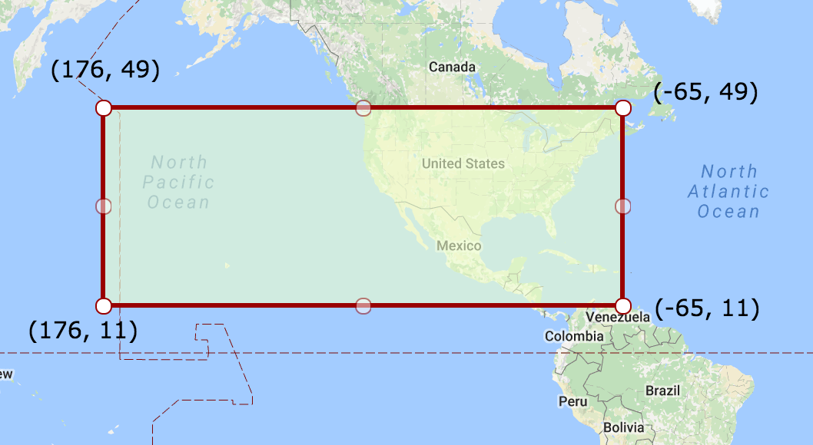

The DCAT-US Profile Version 3 (DCAT-US 3.0) is an updated specification designed to facilitate data cataloging,
discovery, and interoperability among US government agencies. Leveraging the strong foundation laid by the Project
Open Data (POD) 1.1 standard (also known as [[DCAT-US-1.1]]), this profile seamlessly aligns with the
emerging Data Catalog Vocabulary (DCAT) - Version 3 (DCAT 3.0)[[[VOCAB-DCAT-3]]] recommendations approved by the
World Wide Web Consortium (W3C), all while upholding the essential FAIR principles. Moreover, it emphasizes
maintaining compatibility with the existing POD 1.1 standard, ensuring a fluid transition. The result ensures
data's Findability, Accessibility, Interoperability, and Reusability (FAIR).
The predominant significance of the DCAT-US 3.0 lies in its role as a bridge between the well-established DCAT-US
1.1 and the forward-looking DCAT 3.0, uniting them under a single, standardized approach for articulating and
exchanging datasets. By harmonizing the most significant attributes of both standards, this profile also addresses
the distinctive metadata prerequisites inherent to the US context. It goes above and beyond by encompassing
specialized properties to address geospatial and statistical datasets, effectively harnessing established
vocabularies to elevate the process of data sharing and subsequent reuse.
Distinguished by its usage of the Shapes Constraint Language (SHACL) for structural and semantic validation, the
DCAT-US 3.0 introduces a highly refined, interoperable, and future-proof framework for describing and validating
dataset metadata. In essence, it is not just a specification but an advanced stride towards achieving a
data-centric landscape where precise metadata description empowers the efficient flow of information while laying
the groundwork for sustained innovation.
Background
The FAIRness Project is introducing a draft update to the Data
Catalog (DCAT) standard for the United States.
This update, “DCAT-US v3.0 Schema,” builds upon the requirements we received from agencies as well as data
creators, providers, and users, Data Inventory statutory requirements, and the lessons learned over ten years of
successful implementation of the Project Open Data Metadata Standard (DCAT-US v1.1) used by Data.gov.
We need your help to review and comment on this draft so that it meets agencies’ data inventory needs and those
of cross-government programs like Data.gov, GeoPlatform, and the Standard Application Process Portal.
Once approved and implemented, the update will improve the FAIRness, or Findability, Accessibility,
Interoperability, and Reusability of all types of federal data. DCAT-US v3 will provide a *single* metadata
standard able to support most requirements for documentation of business, technical, statistical, and geospatial
data consistently.
Key features of the DCAT-3 Schema are:
DCAT-US v3 is not a “new” standard; it is a “profile” of or implementation of the World Wide Web Consortium’s
(W3C) DCAT standard [[VOCAB-DCAT-3]]
DCAT-US v3 is compatible with existing DCAT v1.1 metadata. No translation is required to implement the new
schema. New metadata elements are added, but there are no major changes to existing elements.
DCAT-US v3 supports new and updated controlled vocabularies, allowing for consistently naming items like
federal agencies, file formats, and units of measure.
DCAT-US v3 will overcome the limitations of DCAT v1.1 when documenting geospatial data, eliminating the need
for a separate federal standard for this subset of data.
DCAT-US v3 follows a similar approach to European metadata DCAT-AP; vendor support is already in place, with
additional support underway.
Please review the documentation below and provide feedback to help make this standard as useful as possible to
you and the broader federal data user community.
Please follow the instructions found here to
submit
your comments and issues with the current draft schema specification.
Overview
The DCAT-US Profile Version 3 is a comprehensive update to the Project Open Data (POD) 1.1 standard, designed to
meet the evolving needs of data exchange and interoperability among US government agencies. This profile builds on
the foundation laid by POD 1.1 and is aligned with the latest DCAT 3.0 standard from the World Wide Web Consortium
(W3C). In addition, the profile aims to embody the FAIR principles, ensuring that data is Findable, Accessible,
Interoperable, and Reusable. This introduction will provide an overview of the purpose of this profile, highlight
the gaps between POD 1.1 and DCAT 3.0, and elaborate on the differences and enhancements offered by the DCAT-US
Profile Version 3.
Purpose and Evolution
The purpose of the DCAT-US Profile Version 3 is to improve data discoverability, accessibility, and
interoperability among US government agencies. By adhering to the FAIR principles, the profile promotes more
effective data sharing and reuse. The FAIR principles emphasize that data should be:
Findable: Easy to discover by humans and machines.
Accessible: Easily retrieved, with well-defined access protocols.
Interoperable: Ready for use with other data sources and applications.
Reusable: Clearly documented and licensed, facilitating reuse by others.
The DCAT-US Profile Version 3 bridges the gap between the POD 1.1 and DCAT 3.0 standards by incorporating the
best features of both while also addressing specific metadata requirements unique to the US context. It offers a
standardized approach for describing and exchanging datasets, thereby enabling more efficient data sharing and
reuse.
Data Structure
The Application Profile specified in this document is based on the specification of the Data Catalog Vocabulary
(DCAT)
developed under the responsibility of the Government Linked Data Working Group at W3C. DCAT is an RDF vocabulary
designed to facilitate interoperability between data catalogs published on the Web. Additional
classes and properties from other well-known vocabularies are re-used where necessary.
The DCAT vocabulary consists of classes and properties.
Classes are things on the internet: Not all of them have URIs, but it is recommended to
provide a URI for them.
They are complex things like a person, an organization, a dataset, a website or a downloadable data file.
Classes have properties: The properties are the attributes describing these things. Some
properties occur
in more than one class, a title for example is a common attribute. Other properties are very specialized such
as a file format that only makes sense for a data file.
Properties can be simple or complex: Some properties are classes. For example, an
organization can have a website. Or a dataset can have a data publisher. In general, a class can be recognized
by its spelling: A property name starts with a lowercase letter such as dcat:dataset , while a class starts
with a capital letter such as dcat:Dataset.
Classes and properties are used to deliver the metadata in a structured way.
Application Areas
The DCAT Application Profile for data portals in United States (DCAT-US) is an Application Profile of the DCAT
vocabulary.
DCAT (“Data Catalog Vocabulary”) is a semantic definition to describe data by the means of
an
RDF vocabulary.
It allows for a decentralized approach regarding the publication of data by enforcing interoperability
via the use of a common language to describe the data.
Being DCAT a generic language, it can be applied in various contexts.
An Application Profile specifies its utilization within a specific domain, context or application,
with the goal of facilitating data exchange. In United States the application profile DCAT-US was defined,
which assumed the role of a de facto standard within the United States
The community defined DCAT-US to provide guidance for American data publishers on how to specify their data
catalogs and to data portal managers on how to process data catalogs, in a DCAT-US conformant manner,
so that interoperability is assured.
It should be always kept in mind that both DCAT-US primarily focus on metadata.
Metadata is by definition secondary information on the data: when and by whom were they published,
which usage conditions apply, how often are they updated, whom to contact about them and where
and how can they be accessed.
Gaps with DCAT-US 1.1
The DCAT-US 1.1 standard, while effective for its time, had some limitations that the DCAT 3.0 standard has
addressed. The key differences between the two standards include:
Increased expressiveness: DCAT 3.0 offers a richer set of classes and properties, enabling
more detailed
descriptions of datasets and their relationships.
Improved support for geospatial data: DCAT 3.0 provides better support for describing
geospatial datasets,
including coordinate reference systems and geometry.
Enhanced handling of statistical data: DCAT 3.0 and RDF Data Cube (QB) specification
introduce new vocabulary terms to describe statistical
datasets and their dimensions more effectively.
Refined vocabularies: DCAT 3.0 benefits from updated reference controlled vocabularies to
ensure better
interoperability between agencies and systems.
DCAT-US Features
The DCAT-US Profile Version 3 not only incorporates the enhancements provided by DCAT 3.0 but also maintains the
US-specific metadata requirements defined in POD 1.1. This profile offers a harmonized approach to data cataloging
that accounts for the unique needs of US agencies.
One of the key features of this profile is its use of reference controlled vocabularies. These vocabularies
enable better interoperability between US agencies by providing a common language for describing datasets. The
profile also introduces new properties to handle geospatial data and statistical datasets, leveraging established
vocabularies in these domains.
Profile Encoding
The encoding of the DCAT-US profile involves the technical aspects of how data is represented and exchanged,
addressing questions about data format and interoperability. While the DCAT-US 3.0 conformance does not strictly
mandate the use of RDF serialization for data exchange, it emphasizes the importance of ensuring that the
exchanged format can be unambiguously transformed into RDF. This flexibility allows for interoperability while
accommodating various data exchange requirements.
One prevalent format for data exchange between systems is JSON (JavaScript Object Notation), which is widely used
due to its simplicity and human-readable nature. To facilitate data exchange in JSON while adhering to the DCAT-US
profile, a dedicated mechanism is provided: the JSON-LD context file. JSON-LD (JSON for Linked Data) is a W3C
Recommendation (JSON-LD 1.1) that establishes a standardized approach for interpreting JSON structures as RDF,
enhancing the potential for semantic integration and interoperability.
The DCAT-US profile offers a JSON-LD context file that implementers can utilize as a foundation for their data
exchange processes. By incorporating this JSON-LD context file, implementers can ensure that their data adheres to
the DCAT-US standards while being exchanged in a JSON format. This allows for a coherent and consistent
representation of the data that aligns with the RDF model, promoting interoperability among different systems and
tools.
It's important to note that the provided JSON-LD context file is not normative, indicating that other JSON-LD
contexts can also be used to establish a conformant DCAT-US data exchange. This flexibility caters to various
implementation scenarios and data requirements, while still adhering to the overarching principles of the DCAT-US
profile. Overall, the encoding of the DCAT-US profile acknowledges the significance of data format and interchange
methods, leveraging JSON-LD and related mechanisms to facilitate seamless and interoperable data exchange within
the context of the DCAT-US specification.
Profile Validation
While the JSON Schema approach used in POD 1.1 was effective in certain scenarios, it has limitations when
compared to using SHACL for defining data models and constraints:
Expressiveness: JSON Schema primarily targets validation of JSON data structures, which can
be less expressive than RDF data models used with SHACL. RDF enables a more flexible and semantically rich
representation of data, while SHACL is designed to provide constraints and validation for RDF data.
Linked Data Compatibility: JSON Schema is not specifically designed for Linked Data or
semantic web applications. SHACL, on the other hand, is tailored for RDF and Linked Data, making it a more
natural fit for data models that need to interoperate with other semantic web resources and standards.
Inferencing Support: SHACL can be used in conjunction with RDF reasoners to validate inferred
triples, offering advanced inferencing capabilities beyond the scope of JSON Schema. This feature enables more
powerful and intelligent data validation.
Extensibility: SHACL is designed to be extensible, allowing users to define custom constraint
components, which can be reused across multiple shapes and datasets. In contrast, JSON Schema has a fixed set of
validation keywords, and extending it may require the introduction of non-standard or custom keywords,
potentially affecting interoperability.
Considering these limitations, the DCAT-US Profile Version 3 has chosen SHACL as the foundation for its data
modeling and validation, ensuring a more expressive, interoperable, and future-proof framework for defining
dataset metadata.
The DCAT-US Profile Version 3 is defined using the Shapes Constraint Language (SHACL), which offers several
advantages over previous approaches:
Expressive and flexible: SHACL allows for the precise definition of constraints on RDF data,
making it easier
to validate and verify datasets.
Scalable and efficient: SHACL is designed for efficient validation, making it suitable for
use with large
datasets and complex data models.
Widely adopted: As a W3C recommendation, SHACL enjoys broad support among data management
tools and libraries,
facilitating interoperability and reuse.
By using SHACL, the DCAT-US Profile Version 3 ensures a robust and extensible foundation for future updates, as
well as compatibility with a wide range of data processing tools and applications.
Document Status
Initial Draft
Conformance
DCAT-US is an application profile of DCAT Version 3.
The DCAT-Profile Guidance states that application profiles may form hierarchies.
The following diagram captures the relationship between DCAT and DCAT-US :
Data Provider requirements
A data catalog conforms to DCAT-US if:
An RDF description of the catalog is available
All classes and properties defined in DCAT-US 3.0 are used in a way consistent with the
semantics declared in this specification.
Properties not mentioned in this specification MAY be used if they are included in either
DCAT 3 and their usage conforms to DCAT 3 if they are
included in DCAT-US or to DCAT if they are only included in DCAT.
Receiver requirements
An application (data portal) conforms to DCAT-US if:
It is able to process RDF catalogs that conform to DCAT-US .
Processing means that it MUST accept incoming data and transparently provide this
data to applications and services.
Processing does not prescribe whether and how the metadata is stored internally,
displayed or made searchable.
This processing of metadata also applies to classes and properties not mentioned in DCAT-US that
are part of
DCAT 3. A DCAT-US conformant receiver MUST also be able to process these classes and
properties].
DCAT-US Classes
This section displays the classes for the DCAT-US 3 profile. We distinguish core classes, which
represent the primary business entities that the application profile is concerned with, from supporting
classes, which are used to provide additional context, metadata, or structure to the core classes.
This following table provides a summary of critical changes and
updates in the DCAT-US 3.0 Application Profile, offering valuable insights into the evolution of class definitions
within this data cataloging standard. Each change type is carefully documented, from the introduction of new
classes specifically designed for DCAT-US 3.0 to updates and adaptations from the broader DCAT specifications,
such as DCAT 1, DCAT 2, and DCAT 3. Understanding these changes is essential for data practitioners, as it enables
them to grasp the evolving landscape of data cataloging and its alignment with various DCAT versions, ultimately
facilitating more effective data management and interoperability.
Change Type
Description
New!
New DCAT-US 3.0 specific class that is not referred in DCAT specifications
Aligned
Class introduced in DCAT specifications that does not exist in DCAT-US 1.1
Core Classes
The DCAT US Application Profile (“DCAT-US ”) are structured around the following main classes:
The "AccessRestriction" class used by NARA represents limitations placed on accessing specific
records or information within their archives, ensuring controlled and responsible access based on
legal, ethical, or security considerations.
An entity (e.g., an individual or an organization) that is associated with Catalogs, Catalog
Records, Data Services, or Datasets. If the Agent is an organization, the use of the Organization
Ontology [[VOCAB-ORG]] is recommended.
A value that allows the contents of a file to be authenticated. This class allows the results of a
variety of checksum and cryptographic message digest algorithms to be represented.
Controlled Unclassified Information (CUI) is information that requires safeguarding or dissemination
controls pursuant to and consistent with applicable law, regulations, and government-wide policies but
is not classified.
A textual resource intended for human consumption that contains information, e.g., a Web page about a
Dataset, a publication, a chapter book, a technical report, but also a blog post.
An identifier in a particular context, consisting of the string that is the identifier; an optional
identifier for the identifier scheme; an optional identifier for the version of the identifier scheme;
an optional identifier for the agency that manages the identifier scheme
This new class specific to DCAT-US represents U.S. government-funded initiatives, allowing datasets to
be linked with unique government identifiers, promoting transparency and effective resource management.
A formal declaration accompanying a dataset which outlines the responsibilities and limitations of
the
data provider in terms of the accuracy, completeness, and potential use of the data. It often serves
to
limit the legal exposure of the data provider by defining the scope of allowed uses and disclaiming
warranties or guarantees.
Represents a collection of people organized together into a community or other social, commercial or
political structure. The group has some common purpose or reason for existence which goes beyond the
set of people belonging to it and can act as an Agent. Organizations are often decomposable into
hierarchical structures.
This class represents an individual human being or a person. It can be used to provide information
about individuals, such as their name, email address, homepage URL, and other personal details.
This new class specific to DCAT-US represents the primary federal program associated with a specific
data asset, sourced from the Federal Program Inventory. This association helps establish the relevance
and context of the data asset, potentially aiding in compliance with the U.S. Evidence Act.
A statement of any changes in ownership and custody of a resource since its creation that are
significant for its authenticity, integrity, and interpretation
A statement about the intellectual property rights (IPR) held in or over a resource, a legal document
giving official permission to do something with a resource, or a statement about access rights.
A UseRestriction is a set of rules, guidelines, or legal provisions that dictate how a particular
resource, asset, information, or object can be utilized. Use restrictions may encompass limitations on
access, distribution, reproduction, modification, or sharing, and they are often put in place to
protect privacy, intellectual property rights, security, or compliance with legal or ethical
standards.
DCAT-US defines four requirement levels for data receivers and senders:
Mandatory property: a receiver MUST be able to process the information for that property;
a sender MUST provide the information for that property.
Recommended property: a receiver MUST be able to process the information for that
property;
a sender SHOULD provide the information for that property if it is available.
Optional property: a receiver MUST be able to process the information for that property;
a sender MAY provide the information for that property but is not obliged to do so.
Deprecated property: a receiver SHOULD be able to process information about instances
of that property; a sender SHOULD NOT provide the information about instances of that property.
The meaning of the terms MUST, MUST NOT, SHOULD and MAY in this section and in the following sections are as
defined in RFC 2119.
In the given context, the term "processing" means that receivers MUST accept incoming data and transparently
provide these data to applications and services. It does neither imply nor prescribe what applications and
services finally do with the data (parse, convert, store, make searchable, display to users, etc.).
Notations
Property: denotes the Property that the class or property is given in DCAT-US .
URI: denotes the property URI.
Range: specifies the range of values that is expected for the property.
ReqLevel (“Requirement level”): denotes whether the class / property is mandatory,
recommended or optional.
Card (“Cardinality”): specifies the minimum number of values that MUST be provided for
that
property and the maximum number of values that MAY be provided.
Usage note: specifies custom usage instructions and provides background information.
CV (“Controlled Vocabulary”): defines which controlled vocabulary SHOULD be used.
Property Evolution in DCAT-US 3.0.
The following table provides an overview of the various types of changes and updates within the DCAT-US
specifications, shedding light on the evolution and adaptation of the data catalog standard. Each change type
is categorized, and its significance is explained, ranging from the introduction of new properties to updates
that align with the latest DCAT specifications. Understanding these changes is essential for data
practitioners and stakeholders seeking to keep pace with the evolving landscape of data cataloging and data
sharing standards.
Change Type
Description
New!
New DCAT-US 3.0 specific property that is not referred in DCAT specifications
Aligned
Property aligned with latest DCAT-3 specification that does not exist in DCAT-US 1.1
Fixed
Fixed property that is inconsistent with DCAT specification
No Change
No change from DCAT-US 1.1 profile
Multilingual Support
Extension of DCAT-US property to support multilingual values
AccessRestriction
The class "AccessRestriction" used by the National Archives and Records Administration (NARA) refers to a
categorization or specification that denotes limitations or conditions imposed on the accessibility of certain
records, documents, or information within their archival holdings. Access restrictions are employed to
regulate
and control access to sensitive or confidential content based on legal, ethical, security, or other relevant
considerations. These restrictions may pertain to who can access the information, the purposes for which it
can
be accessed, and the conditions under which it can be utilized. The "AccessRestriction" class provides a
structured framework for classifying and managing these access limitations within NARA's archival context,
contributing to the proper governance and responsible dissemination of historical records and data.
The "AccessRestriction" class used by NARA represents limitations placed on accessing specific records
or
information within their archives, ensuring controlled and responsible access based on legal, ethical, or
security considerations.
Usage note
The "AccessRestriction" class serves as a valuable tool within NARA's archival framework, enabling
the
organization to effectively manage and communicate access limitations for specific records or
information. By employing this class, NARA can categorize and enforce controlled access to sensitive
content, safeguarding confidentiality, adhering to legal requirements, and preserving the integrity of
historical data. Researchers, archivists, and authorized users can rely on "AccessRestriction" to
navigate and understand the accessibility parameters associated with archived materials, facilitating
responsible information dissemination and usage.
Rationale
The "AccessRestriction" class in the DCAT-US application profile is essential for categorizing and managing
access restrictions according to NARA standards, ensuring responsible access to sensitive historical
records. It enhances transparency, aiding researchers and authorized users in understanding and navigating
access parameters for archived materials.
An activity is something that occurs over a period of time and acts upon or with entities; it may include
consuming, processing, transforming, modifying, relocating, using, or generating entities.
Usage note
The activity associated with generation of a dataset will typically be an initiative, project, mission,
survey, on-going activity ("business as usual"). mission or survey etc. Multiple prov:wasGeneratedBy properties can be used
to indicate the dataset production context at various levels of granularity.
Details about how to describe the activity that generated a dataset are out of scope for this applicition
profile. prov:Activity provides for minimum basic properties
for labeling and classification of activities.
Rationale:
Integrating prov:Activity into the DCAT-US schema offers a
streamlined, generic class to
represent a myriad of operations, such as initiatives, projects, and ongoing activities, without the
complexity of managing numerous specialized classes. This inclusion not only simplifies the representation
of varied activities under a unified semantic framework but also enhances data provenance tracking and
interoperability across diverse systems and domains. Consequently, it provides a flexible, future-proof
approach to accommodate evolving types of activities without necessitating continual schema modifications.
Specify the components of the delivery address for an entity
Usage note
When incorporating [[VCARD-RDF]] vcard:Address within
DCAT-US, ensure
to utilize its properties, such as vcard:street-address,
vcard:locality, and vcard:country-name, to provide comprehensive and accurate
address details for entities like organizations or publishers. Always adhere to consistent formatting across
the catalog, be mindful of privacy considerations, especially for individual addresses, and validate the
data regularly to maintain its accuracy and reliability.
Rationale:
Integrating [[VCARD-RDF]]'s contact point address into DCAT-US ensures a standardized, interoperable
format for
presenting address data
Incorporating locn:Address from the W3C Location ontology
[[LOCN]] into DCAT-US provides a standardized,
structured, and extensible format to represent physical addresses, facilitating consistent, interoperable,
and precise sharing of location information across various datasets and digital platforms.
An entity that acts on something (eg. person, group, software or physical artifact).
Usage note
Use this class when refering to a software agent that is associated with Catalogs, Catalog
Records, Data Services, or Datasets.
If the Agent is an organization, the use of the org:Organization is recommended.
If the Agent is a person, the use of foaf:Person is recommended
Rationale:
The addition of the foaf:Agent class in
DCAT-US 3.0 serves a dual purpose. Firstly, it allows for the representation of software agents, aligning
with modern data automation needs. Secondly, it acts as an abstract class for both foaf:Person and org:Organization, promoting consistency and
interoperability while simplifying resource descriptions within the dataset catalog.
The inclusion of prov:Attribution in the DCAT profile
enables clear data source attribution, promoting
responsible data sharing and proper citation practices. It aligns the profile with data provenance best
practices for accurate attribution in data sharing.
A Web-based data catalog is typically represented as a single instance of this class.
Populate metadata within the dcat:Catalog to facilitate resource discovery, including title,
description, classifiers and other relevant information.
Specify the resources hosted within the catalog by linking them as dcat:dataset or dcat:service.
Rationale
The update of the dcat:Catalog class aligns
with the generalization of catalog scope in DCAT-US 3.0, accommodating catalogs of datasets, data services,
or a mixture of both. It reflects the evolving landscape of data publication and discovery, allowing data
publishers to describe and share their resources effectively. Additionally, by making Catalog a subclass of
Dataset, DCAT-US promotes consistency in metadata representation and enables catalogs to be composed of
other catalogs, promoting modularity and extensibility in the data catalog ecosystem.
This property refers to a language used in the textual metadata describing
titles, descriptions, etc. of the Datasets in the Catalog.
The properties title and description of Catalogs, Datasets or Distribution
can be provided in multiple languages. In that case, it makes sense to also list
these languages on the Catalog level.
This property refers to a geographical area covered by the Catalog.
TO DISCUSS: Conventions to be used: The Vocabularies Name Authority Lists MUST be used for
continents, countries and
places that are in those lists; if a particular location is not in one of the mentioned Named
Authority Lists, Geonames URIs MUST be used:
[[DATA-GOV-CONT]],
[[DATA-GOV-COUNTRY]],
[[DATA-GOV-PLACE]],
[[GEONAMES]]
This property contains the most recent date on which the Catalog was modified.
The value of this property indicates a change to the actual resource, not a change to the
catalog record. An absent value MAY indicate that the resource has never changed after its initial
publication, or that the date of last modification is not known, or that the resource is
continuously updated.
Property: schema version
Property
schema version
Definition:
An established standard to which the described catalog conforms.
A record in a catalog, describing the registration of a single dcat:Resource.
Usage note
This class is optional and not all catalogs will use it. It exists for catalogs where a distinction
is made between metadata about a dataset or service and metadata about the entry in the catalog
about the dataset or service. For example, the publication date property of the dataset
reflects the date when the information was originally made available by the publishing agency, while the
publication date of the catalog record is the date when the dataset was added to the catalog. In
cases where both dates differ, or where only the latter is known, the publication date SHOULD only
be specified for the catalog record. Notice that the W3C PROV
Ontology [[PROV-O]] allows describing further provenance information such as the details of the process and
the agent involved in a particular change to a dataset or its registration.
Rationale
While its use is not mandatory, the incorporation of dcat:CatalogRecord into DCAT-US 3.0 holds
significant value. It enables catalogs to distinguish between metadata describing datasets or services and
the actual catalog entries. This differentiation proves especially advantageous for ensuring adherence to
application profiles that demand specific metadata for catalog records. Furthermore, it streamlines resource
lifecycle management, empowering catalogs to monitor alterations and revisions to their entries, ultimately
bolstering data governance and quality assurance protocols.
A link to the Dataset, Data service or Catalog described in the Catalog Record.
Usage note
A catalog record will refer to one entity in a catalog. This can be either a Dataset or a Data
Service. To ensure an
unambigous reading of the cardinality the range is set to Cataloged Resource. However it is not the
intend with this
range to require the explicit use of the class Cataloged Record. As abstract class, an subclass
should
be used.
A Checksum is a value that allows to check the integrity of the contents of a file. Even small changes
to
the
content of the file will change its checksum. This class allows the results of a variety of checksum and
cryptographic
message digest algorithms to be represented [[SPDX]].
Usage note
The Checksum includes the algorithm (spdx:algorithm)
and
value
(spdx:checksumValue) that allows the
integrity of a file to
be verified to ensure no errors occurred in transmission or storage.
Rationale:
Introducing the spdx:Checksum class in
DCAT-US bolsters data integrity and trust by ensuring datasets remain
unaltered during transfers. This standardized approach promotes consistency across catalogs, facilitates
error detection, and adapts to evolving cryptographic needs, enhancing the utility of automated tools.
A controlled vocabulary term used to classify Catalog, Dataset, or Data Service.
Usage note
Following FAIR Vocabulary principles, Concept URI should be made resolvable and accessible using SKOS
encoding and provided in Linked Data format (RDF/XML,TTL, JSON-LD, NTriples)
Ensure FAIR Resolvability: Make Concept URIs resolvable using FAIR principles, allowing them to be
Findable, Accessible, Interoperable, and Reusable. This ensures that skos:Concept instances can be easily discovered,
accessed, integrated with other resources, and reused across the DCAT-US ecosystem, promoting data
interoperability and accessibility.
To enhance data interoperability and consistency, it is advisable to reuse established controlled
vocabularies such as GCMD, Agrovoc, and NAICS for data description.
Rationale:
The inclusion of skos:Concept in DCAT-US 3.0
enhances semantic search in catalogs, enabling more accurate discovery of Catalogs, Datasets, and Data
Services. It improves user experience, promotes data discoverability, and supports better resource
utilization. Additionally, it aligns with international standards like SKOS, ensuring compatibility and
adherence to recognized controlled vocabulary practices.
A concept collection (e.g. controlled vocabulary) in which a concept is defined.
Usage note
Following FAIR Vocabulary principles, Concept Scheme URI should be made resolvable and accessible
using SKOS encoding and provided in Linked Data format (RDF/XML,TTL, JSON-LD, NTriples)
To enhance data interoperability and consistency, it is advisable to reuse established controlled
vocabularies such as GCMD, Agrovoc, and NAICS for data description.
Rationale:
The introduction of skos:ConceptScheme in
DCAT-US 3.0 enhances data resource organization, categorization,
and accessibility. It provides a structured framework for controlled vocabularies, aligning with FAIR
Vocabulary principles for improved data interoperability and discoverability.
The introduction of vcard:Contact in DCAT-US 3.0 is driven by
the need for standardized, reliable, and
interoperable Point of Contact information, ultimately improving the accessibility and usability of data
resources within the DCAT-US ecosystem.
This property specifies the address of the contact
Example
CUI Restriction
Controlled Unclassified Information (CUI) is information that requires safeguarding or dissemination
controls pursuant to and consistent with applicable law, regulations, and government-wide policies but
is not classified.
Represents Controlled Unclassified Information (CUI), which is information that requires safeguarding or
dissemination controls in accordance with applicable laws, regulations, and government-wide policies but is
not classified as confidential.
Usage note
The CUI Restriction class is designed to capture information related to Controlled Unclassified
Information (CUI) in accordance with NARA guidelines.
Users of this class must provide the mandatory properties, i.e the CUI banner marking and
designation indicator, to accurately describe the CUI status of a resource.
The optional property, "required indicator per authority," allows for additional information or
context about CUI restrictions, providing flexibility for specific use cases.
Rationale:
The introduction of the dcat-us:CuiRestriction
class in
DCAT-US 3.0 is driven by the need for compliance with National Archives and Records Administration (NARA)
guidelines regarding Controlled Unclassified Information (CUI). This addition ensures that DCAT-US aligns
with NARA's standards, promotes transparency, facilitates compliance audits, and supports efficient resource
management. Ultimately, it enhances data interoperability and security within the government data ecosystem.
CUI (Controlled Unclassified Information) banner marking is required for any unclassified
information that is deemed sensitive and requires protection.
The kind of service can be indicated using the
dcterms:type
property. Its value may be taken from a controlled vocabulary such
as the Data.GOV spatial data service type code list
[[DATA-GOV-SDST]].
Rationale:
Introducing dcat:DataService is essential as it
clarifies the representation of data services, addressing
the confusion caused by using dcat:Distribution
to describe services in DCAT 1. This addition promotes clear
communication of service-related information, improving discoverability, and facilitating seamless
integration and usage by data consumers and applications.
The endpoint description gives specific details of the actual
endpoint instances, while
dcterms:conformsTo
is used to indicate the general standard or specification that
the endpoints implement.
An endpoint description may be expressed in a machine-readable
form, such as an OpenAPI (Swagger) description [[?OpenAPI]], an
OGC GetCapabilities response [[?WFS]],
[[?ISO-19142]], [[?WMS]], [[?ISO-19128]], a SPARQL Service
Description [[?SPARQL11-SERVICE-DESCRIPTION]], an
[[?OpenSearch]] or [[?WSDL20]] document, a Hydra API description
[[?HYDRA]], else in text or some other informal mode if a formal
representation is not possible.
This property contains a free-text account of the Data Service.
Usage note
This property can be repeated for parallel language versions of the description (see ). On the user interface of data portals, the
content of the element whose language corresponds to the display language selected by the user is
displayed.
This property refers to a language supported by the Data Service. This property can be repeated if
multiple languages
are supported in the Data Service.
This property refers to a geographic region that is covered by the Data Service.
Usage note
TO DISCUSS: Conventions to be used: The Vocabularies Name Authority Lists MUST be used for
continents, countries and
places that are in those lists; if a particular location is not in one of the mentioned Named
Authority Lists, Geonames URIs MUST be used:
[[DATA-GOV-CONT]],
[[DATA-GOV-COUNTRY]],
[[DATA-GOV-PLACE]],
[[GEONAMES]]
This property describes the spatial extent of domain of application of an data service and is
standardized in
WGS 84 Lat/Long coordinate system.
Example
Dataset
A Dataset is a collection of data, published or curated by a single source and related by a common
idea or concept. In contrast to a Data Service a Dataset is expected to be a collection of data that is
available for access or download in one or more formats, as Distributions. Distributions belonging to
the same Dataset should not differ in regards to the idea of the data that they represent. They may differ
in regards to the physical representation of the data such as format or resolution. Or they may split the
data of the dataset into portions of comparable size such as data per time period or location.
DCAT 3 provides guidelines about the usage of Data services and Distribution in relation to Datasets
[[VOCAB-DCAT-3]].:
This class describes the conceptual dataset. One or more representations might be available, with
differing schematic layouts and formats or serializations.
This class describes the actual dataset as published by the dataset provider. In cases where a
distinction between the actual dataset and its entry in the catalog is necessary (because metadata
such
as modification date might differ), the dcat:CatalogRecord class can be used for the latter.
The notion of dataset in DCAT is broad and inclusive, with the intention of accommodating resource
types arising from all communities. Data comes in many forms including numbers, text, pixels, imagery,
sound and other multi-media, and potentially other types, any of which might be collected into a
dataset.
Rationale:
The update of dcat:Dataset is crucial as it
aligns the DCAT profile with international standards,
offering a standardized and widely recognized way to describe datasets. This alignment enhances data
interoperability and discoverability, enabling data publishers to provide structured metadata, improving
data sharing, and facilitating seamless integration for users and applications.
This property contains a free-text account of the Dataset.
Usage note
This property can be repeated for parallel language versions of the
description (see Multilingualism). On the user interface
of
data portals, the content of the element whose language corresponds to the
display language selected by the user is displayed.
This property links the Dataset to an available Distribution.
In exceptional cases, a Dataset for which no distribution form exists (yet) can
be described in the Catalog. In this case, the element dcat:distribution may be omitted.
This property refers to a geographic region that is covered by the Dataset.
CV to be used: The Vocabularies Name Authority Lists MUST be used for continents,
countries and places that are in those lists; if a particular location is not in one of
the mentioned Named Authority Lists, Geonames URIs MUST be used:
[[DATA-GOV-CONT]],
[[DATA-GOV-COUNTRY]],
[[DATA-GOV-PLACE]],
[[GEONAMES]]
This property contains the most recent date on which the Dataset was changed or modified.
No value may indicate that the Dataset has never changed after its initial publication,
or that the date of the last modification is not known, or that the
Dataset is continuously updated
This property MUST only be set if the distributions (the actual data) that
the Dataset describes have been updated after it has been issued. In this case the property
MUST contain the date of the last update. That way a person or institution using the data
for an analysis or application will know when to update the report or application on their side.
The temporal coverage of a dataset may be encoded as an instance of dcterms:PeriodOfTime, or may
be
indicated using an IRI reference (link) to a resource describing a time period.
This property refers to an implementing rule or other specification.
This property SHOULD be used to indicate the model, schema, ontology, view or profile
that this representation of a Dataset conforms to. This is (generally) a complementary concern
to the media-type or format.
A statement of any changes in ownership and custody of the resource since its creation that
are
significant for its authenticity, integrity, and interpretation.
Usage note
This property contains a statement about the lineage of a Dataset.
This property refers to a related resource where the relationship cannot be further specified
as
a
dcat:qualifiedRelationship. This may be additional material such as an article, example or
documentation helpful in the context of the Dataset.
The element can also be used to link to legal foundations that apply to the publication or usage
of the Dataset.
Refers to the performed quality measurements.It represents the evaluation of a given dataset against
a specific quality metric
Usage note
Use for quality measurements other than spatial resolution in meters (use dcat:spatialResolutionInMeters).
Examples of quality measurements includes completeness, accuracy, accuracy, timeliness, granularity.
If the dataset is an image or grid this should correspond to the spacing of items. For other
kinds
of spatial datasets, this property will usually indicate the smallest distance between items in
the
dataset.
The range of this property is a decimal number representing a length in meters. This is
intended
to provide a summary indication of the spatial resolution of the data as a single number. More
complex descriptions of various aspects of spatial precision, accuracy,
resolution and other statistics can be provided using the Data Quality Vocabulary [VOCAB-DQV].
If the dataset is a time-series this should correspond to the spacing of items in the series.
For
other kinds of dataset, this property will usually indicate the smallest time difference between
items in the dataset
This is intended to provide a summary indication of the temporal resolution of the dataset as
a
single value. More complex descriptions of various aspects of temporal precision, accuracy,
resolution and other statistics can be provided using the Data Quality Vocabulary [VOCAB-DQV].
A thumbnail picture illustrating the content of the dataset.
Usage note
A thumbnail picture illustrating the content of the Dataset.
For distributions that consist of visual content (photographs, videos, maps, etc.)
it makes sense to add a limited number of thumbnails to the metadata.
Dataset series can be also soft-typed via property dcterms:type as in the approach used in
[[GeoDCAT-AP]]
Common scenarios for dataset series include: time series composed of periodically released
subsets; map-series composed of items of the same type or theme but with differing spatial footprints.
Rationale:
Incorporating dcat:DatasetSeries is
essential to enable the structured grouping and presentation of
related datasets, ensuring that data publishers can convey meaningful collections of data. This
facilitates
efficient data organization and discovery for users, aligning the DCAT profile with international
standards
for dataset series representation.
This property contains a free-text account of the Dataset Series.
This property can be repeated for parallel language versions of the
description (see Multilingualism). It is recommended to
provide
an indication
about the dimensions the Dataset Series evolves.
This property refers to a geographic region that is covered by the Dataset Series.
When spatial coverage is a dimension in the dataset series then the spatial coverage of each
dataset
in the collection
should be part of the spatial coverage. In that case, an open ended value is recommended, e.g.
EU
or a
broad bounding
box covering the expected values.
CV to be used: The Vocabularies Name Authority Lists MUST be used for continents,
countries and places that are in those lists; if a particular location is not in one of
the mentioned Named Authority Lists, Geonames URIs MUST be used:
[[DATA-GOV-CONT]],
[[DATA-GOV-COUNTRY]],
[[DATA-GOV-PLACE]],
[[GEONAMES]]
This property contains the most recent date on which the Dataset Series was changed or
modified.
No value may indicate that the Dataset Series has never changed after its initial
publication,
or that the date of the last modification is not known, or that the
Dataset Series is continuously updated
This is not equal to the most recent modified dataset in the collection of the dataset
series.
This property refers to an entity (organization) responsible for ensuring the coherency of
the
Dataset Series.
The publisher of the dataset series may not be the publisher of all datasets. E.g. a digital
archive
could take over the publishing of older datasets in the series.
When temporal coverage is a dimension in the dataset series then the temporal coverage of
each
dataset in the collection
should be part of the temporal coverage. In that case, an open ended value is recommended,
e.g.
after 2012.
The temporal coverage of a dataset series may be encoded as an instance of
dcterms:PeriodOfTime,
or may be
indicated using an IRI reference (link) to a resource describing a time period
This property contains the date of formal issuance (e.g.,publication) of the Dataset Series.
The moment when the dataset series was established as a managed resource. This is not equal
to
the
release date of the oldest dataset in the collection of the dataset series.
Example
In this example, ex:populationCensus represents a series of datasets related to the US
Population Census Data,
which is issued every 10 years (decennial). Individual datasets for specific years (e.g.,
ex:populationCensus-1950) are also defined, each pointing to the next dataset in the series using
dcat:next.
Distribution
In the context of the DCAT-US profile, a metadata entry of this class serves to characterize a distribution of
data, which constitutes a specific representation of a Dataset. Datasets within this profile may offer multiple
serializations, each potentially differing in various aspects, including natural language, media type or format,
schematic organization, temporal and spatial resolution, level of detail, or profiles that specify any
combination of these attributes.
A distribution may encompass the entirety of the Dataset's data or only a subset thereof. For example, it could
encompass all data related to the population in the United States or focus exclusively on a specific year, such
as 2020. Alternatively, it might provide the data in an alternate format, such as a graphical representation
covering the years 2010 through 2020.
Within the DCAT-US profile, various relationships between Datasets and their distributions are represented. The
most straightforward relationship involves aggregating different physical representations of data, referred to
as "Distributions," into a single Dataset. An example of such a Dataset is a time series, where each
distribution corresponds to one year of data, and the Dataset spans multiple years.
In the DCAT vocabulary, dcat:Distribution is employed to characterize the diverse representations
and formats in which a dataset is disseminated, facilitating the description of different versions or media
types of the same data, and often includes properties like dcat:downloadURL for direct download
links. On the other hand, dcat:DataService serves the purpose of detailing data access services,
such as APIs and endpoints, enabling programmatic or interactive data retrieval, with key properties like
dcat:endpointURL specifying service endpoints and dcat:serviceType indicating the type
of service, thus distinguishing between the description of data formats and the specification of data access
services within the DCAT framework.
A specific representation of a dataset. A dataset might be available in multiple serializations that
may
differ in various ways, including natural language, media-type or format, schematic organization,
temporal
and spatial resolution, level of detail or profiles (which might specify any or all of the above).
This represents a general availability of a dataset. It implies no information about the actual
access
method of the data, i.e., whether by direct download, API, or through a Web page.
The use of dcat:downloadURL property indicates directly downloadable distributions.
Rationale:
The update to DCAT 3 dcat:Distribution is
of paramount significance as it greatly enhances data accessibility. It introduces a more comprehensive and
structured approach to describing data distributions, ensuring that data consumers can easily understand and
access the data in the format that best suits their needs, ultimately fostering greater data utilization and
dissemination.
This property contains a URL that gives access to a Distribution of the Dataset. The
resource
at
the access URL may contain information about how to get the Dataset.
This property refers to the file format of the Distribution.
CV to be used: [[DATA-GOV-FT]]
If a format is not available:
a) media type ([[IANA-MEDIA-TYPES]]) should be used
b) If necessary, a discussion to evaluate the adoption within the US should be
launched.
This property contains a name given to the Distribution. This property can be repeated for
parallel language versions of the description
(see Multilingualism).
The title MUST be given if the distribution contains only part of the data offered by the
Dataset
The title can be given in several languages. In multilingual data portals, the title in the
language selected by a user will usually be shown as title for the distribution.
This property MAY be used to provide more information about the format in which an
Distribution is released. This is different from the file format as, for example, a ZIP file (file
format) could contain an XML
schema (representation technique).
This property refers to the maturity of the Distribution. It MUST take one of the values
Completed, Deprecated, Under Development, Withdrawn from the ADMS status [[VOCAB-ADMS-SKOS]
vocabulary.
This property SHOULD be used to specify the character encoding of the Distribution, by using
as value the character set names in the IANA register [[IANA-CHARSETS]].
This property refers to the format of the file in which the data is contained in a
compressed form, e.g., to reduce the
size of the downloadable file. It SHOULD be expressed using a media type as defined in the
official register of media types managed by IANA [[IANA-MEDIA-TYPES]].
If a dataset contains distributions that differ regarding their content beyond just
differences
in format or resolution this property can be used to specify temporal or spatial coverage of
the
data that the distribution contains.
In case of a downloadable file, it is good practice to repeat the mandatory accessURL
in this more specific property, to indicate to the data user that the distribution has this
extra characteristic of being downloadable. The downloadURLs MAY thus be the same as the
accessURLs but they MAY also differ.
A thumbnail picture illustrating the content of the Distribution.
For distributions that consist of visual content (photographs, videos, maps, etc.) it makes
sense to add a limited number of thumbnails to the metadata.
It’s a DCAT-US Custom Class (not present in [[DCAT-AP]]).
This property refers to a language used in the Distribution.
This property can be repeated if the metadata is provided in multiple languages.
The property MUST be set if the distribution is language-dependent, or if it is given in
some of the languages German, French, Italian and English but not in all four languages.
>This property refers to the media type of the Distribution as defined in the official
register of media types managed by IANA. [[IANA-MEDIA-TYPES]].
The encoding in JSON-LD allows to use mime type without the full URL (e.g. text/csv). The
JSON-LD context
processor will expand automatically to the full uri in RDF using the base uri
https://www.iana.org/assignments/media-types/.
This preserves backward compatibility with DCAT-US 1.1
This property refers to the format of the file in which one or more data files are
grouped together, e.g. to enable a set of related files to be downloaded together.
It SHOULD be expressed using a media type as defined in the official register of media types
managed
by IANA.
A publication - as a scientific paper, a techni cal report, a book, book chapter, but also a blog
post.
Usage note
Depending on whether a catalog supports or not publications as first-class citizens, a publication can
be fully described, or simply denoted by its URI.
Rationale:
The introduction of foaf:Document
significantly improves the representation of documents within the DCAT-US profile. It ensures that metadata
about documents, such as title, format, language, and access options, are clearly defined and standardized.
This
alignment with global data standards fosters interoperability and eases document integration into various
data ecosystems, benefiting both publishers and consumers.
GeographicBoundingBox describes the spatial extent of domain of application of an resource and is
standardized
in WGS 84 Lat/Long coordinate system.
Usage note
Strongly recommended for geospatial data
Rationale
There is no consensus and common vocabulary to describe spatial bounding box in the
community. GML Envelope was proposed but it is too cumbersome to process. We introduce four separates fields
for each bound (west, east, north and south) that removes any ambiguity and make it easy to index and query
Incorporating adms:Identifier in the DCAT-US
profile fosters a culture of data governance and trust by transparently documenting the authority behind
each identifier. This enhances data reliability and credibility, boosting confidence for DCAT-US users.
Additionally, it enables versatile data access using multiple identifiers, enhancing overall data
accessibility and usability for diverse stakeholders.
This property contains a free-text account of the Investment.
This property can be repeated for parallel language versions of the
description (see ). On the user interface
of data portals, the content of the element whose language corresponds to the
display language selected by the user is displayed.
A formal declaration accompanying a dataset which outlines the responsibilities and limitations of the
data provider in terms of the accuracy, completeness, and potential use of the data. It often serves to
limit the legal exposure of the data provider by defining the scope of allowed uses and disclaiming
warranties or guarantees.
Usage note
The LiabilityStatement should be attached to a dcat:Dataset to indicate the terms and conditions of
the
dataset's usage.
This statement should provide information on:
The accuracy or completeness of the dataset.
Limitations on how the dataset may be used.
Any disclaimers or lack of guarantees/warranties.
Indemnification details.
The statement may be provided as a literal text or as a URL pointing to a detailed liability
statement.
Utilizing the LiabilityStatement helps in setting clear expectations for consumers of the dataset
and
limits potential legal exposures of the data provider.
Rationale
Introducing dcat-us:LiabilityStatement
in DCAT-US
clarifies data provider responsibilities and limitations, reducing legal risks by defining acceptable uses
and disclaiming warranties. This ensures transparency and legal compliance in data sharing within the United
States.
Property rdfs:label MAY only be used to specify the text of liability statement
information. This property can be repeated for
parallel language versions of the description
A legal document giving official permission to do something with a resource.
Usage note
License document SHOULD be specified only with URIs from an endorsed Data.gov registry.
Property spdx:licenseText MAY only be used
to
specify license information in legacy metadata records, not compliant with
standard license from an endorsed Data.Gov registry.
Rationale:
The introduction of dcterms:LicenseDocument in
the DCAT profile enables the customization of license text. This flexibility empowers data publishers to
tailor license terms to specific dataset requirements, facilitating clear communication of licensing
conditions and promoting responsible data sharing and usage while adhering to established international
standards.
Property spdx:licenseText MAY only be used to specify license information in legacy
metadata records, not compliant with
standard license from an endorsed registry. This property can be repeated for
parallel language versions of the description
A spatial region or named place. It can be represented using a controlled vocabulary or with
geographic
coordinates.
Usage note
For an extensive geometry (i.e., a set of coordinates denoting
the vertices of the relevant geographic area), the property
locn:geometry
[[LOCN]] SHOULD be used.
For a geographic bounding box delimiting a spatial area the
property
dcat:bbox
SHOULD be used.
For the geographic center of a spatial area, or another
characteristic point, the property
dcat:centroid
SHOULD be used.
Rationale:
The introduction of dcterms:Location in
DCAT-US 3.0 is driven by the need to restore compatibility with the
DCAT standard. DCAT-US 1.1 had deviated from the standard by using strings for location in
dcterms:spatial property, which was
incompatible. This addition aligns DCAT-US with recognized geospatial standards (e.g., Geosparql, WKT,
GeoJSON, W3C Location) for representing geometries, addresses, and location names, ensuring data
compatibility, discoverability, and integration while adhering to international data management practices.
rdfs:Literal typed as geosparql:wktLiteral
or
geosparql:gmlLiteral
Definition
The geographic center (centroid) of a spatial thing
Usage note
The range of this property (rdfs:Literal) is intentionally generic, with the purpose of
allowing
different geometry
literal encodings. E.g., the geometry could be encoded as a WKT literal (geosparql:wktLiteral)
Please note that the order of usage is as follows: use the most specific geospatial
relationship
by
preference. E.g. if
the spatial description is a bbox, use dcat:bbox, otherwise use locn:geometry
The WKT encoding supports geospatial positions expressed in coordinate reference systems
other
than WGS84.
rdfs:Literal typed as geosparql:wktLiteral
or
geosparql:gmlLiteral
Usage note
The range of this property (rdfs:Literal) is intentionally generic, with the purpose of
allowing
different geometry
literal encodings. E.g., the geometry could be encoded as a WKT literal (geosparql:wktLiteral)
Please note that the order of usage is as follows: use the most specific geospatial
relationship
by
preference. E.g. if
the spatial description is a bbox, use dcat:bbox, otherwise use locn:geometry
The WKT encoding supports geospatial positions expressed in coordinate reference systems
other
than WGS84.
Associates a spatial thing [[?SDW-BP]] with a corresponding
geometry.
Usage note
The range of this property (locn:Geometry)
allows
for any type of geometry specification. E.g., the
geometry could be encoded by a literal, as
WKT (geosparql:wktLiteral
[[GeoSPARQL]]), or represented by a class, as
geosparql:Geometry
(or any of its subclasses) [[GeoSPARQL]].
Data publishers should consider using well-established IANA [[IANA-MEDIA-TYPES]] URLs for media types
whenever possible to
enhance compatibility and interoperability. However, the ability to create custom media types using labels
provides flexibility for unique data requirements. When creating custom media types, it's advisable to
provide clear and concise definitions to ensure transparency and understanding for data consumers. Striking
a balance between standardized and custom media types optimizes data sharing within the DCAT-US framework.
Rationale:
Incorporating dcterms:MediaType in DCAT-US
combines the use of established IANA [[IANA-MEDIA-TYPES]] URLs for standardized media types with the
flexibility to create custom
types using labels. This dual approach ensures compatibility with recognized media types while allowing
adaptability to specific needs, promoting both data interoperability and flexibility in data sharing and
dissemination.
Represents a standard to measure a quality dimension. An observation (instance of
dqv:QualityMeasurement)
assigns a value in a given unit to a Metric.
Usage note
The concept of a metric is used to define and measure specific aspects or dimensions of data quality
within a given context, providing a standardized and quantifiable way to assess the quality of data. It
allows for the comparison and evaluation of data quality
across different resources and enables the development of consistent quality assessment frameworks and
methodologies.
Rationale:
Introducing dqv:Metric in the DCAT-US profile enhances
dataset quality assessment and management by aligning with international data quality standards. It allows
data publishers to systematically define and communicate dataset quality characteristics, promoting
transparency and informed data utilization, fostering trust, and supporting responsible data sharing within
the DCAT-US ecosystem.
Represents a collection of people organized together into a community or other social, commercial or
political structure. The group has some common purpose or reason for existence which goes beyond the set
of
people belonging to it and can act as an Agent. Organizations are often decomposable into hierarchical
structures.
When utilizing the org:Organization class
in DCAT-US 3.0, data publishers are encouraged to provide the preferred label (skos:prefLabel) for the organization, along with any
relevant alternative labels (skos:altLabel) and
abbreviations skos:notation. This usage is
consistent with the W3C Organization Recommendation standard [[VOCAB-ORG]].This practice ensures
comprehensive and flexible organization identification, improving data discoverability and search
accuracy. Data publishers should strive to maintain consistency in naming conventions while considering
variations and common aliases used to refer to organizations. By providing a well-rounded representation
of organizations, DCAT-US 3.0 enhances data usability and transparency, facilitating efficient data search
and retrieval.
Rationale:
Improving the org:Organization class in
DCAT-US 3.0 by supporting prefLabel, alternative labels, and abbreviations is essential to enhance
organization representation. This enhancement accommodates variations in organization naming, promotes data
interoperability, and improves discoverability within datasets. By incorporating these features, DCAT-US 3.0
aligns with best practices in data representation, enhances data search and transparency, and optimizes the
overall usability of data resources.
PeriodOfTime represents a period of time with a start date and an end.
Usage note
The start and end of the interval SHOULD be given by using properties dcat:startDate, and dcat:endDate, respectively. The
interval
can also be open - i.e., it can have just a start or just an end.
Rationale:
The introduction of dcterms:PeriodOfTime
in
DCAT-US 3.0 is pivotal for harmonizing with international
standards and rectifying the inconsistency with DCAT 1. In DCAT-US 1.1, [[ISO8601-1]] was used for interval
representation in dcterms:temporal, diverging from DCAT 1's requirement of
dcterms:PeriodOfTime. This
alignment with DCAT 3
standards in DCAT-US 3.0 not only resolves discrepancies but also streamlines data processing, simplifying
parsing and indexing of time intervals. By adopting dcterms:PeriodOfTime, DCAT-US 3.0 promotes
ease
of
implementation, ensuring uniformity, flexibility, accuracy, and enhanced interoperability in handling
time-related data, ultimately benefiting data usability and exchange.
This class represents an individual human being or a person. It can be used to provide information
about individuals, such as their name, email address, homepage URL, and other personal details.
The rationale for enhancing the foaf:Person class in DCAT-US 3.0 is to
provide a more comprehensive and standardized representation of individuals within datasets. In earlier
versions, like DCAT 1.1, only a single "name" property was available for describing persons, limiting the
richness of personal data representation. By introducing properties like "firstName," "givenName," and
"affiliation," DCAT-US 3.0 aligns with best practices in data representation, allowing data publishers to
provide more detailed information about individuals and their affiliations with organizations. This
enhancement enhances data usability and transparency.
This class can be used to categorize, manage, and retrieve datasets that are related to or generated by a
particular government program, facilitating efficient data discovery and utilization among stakeholders and
the public.
Rationale:
In DCAT-US 1.1, the programCode field was utilized to link datasets to agency programs, yet
it was constrained by its inability to host additional metadata, such as the program's description,
applicable legislation, or other pertinent details. This limitation hindered the comprehensive
representation and discoverability of program-related data. The introduction of a dcat-us:Program class in
DCAT-US seeks to overcome this by
providing an extensible mechanism that not only accommodates detailed metadata about a program but also
strategically positions the schema for future extensions and adaptations. This means that as the
requirements for data representation evolve, the "Program" class can be seamlessly expanded to incorporate
new metadata fields, ensuring that the schema remains relevant and continues to support enhanced data
discoverability, interoperability, and utilization across various applications and use cases. This approach
aligns with future-proofing data management practices, ensuring that the schema can adapt and continue to
provide value in diverse and evolving data environments.
This property contains a free-text account of the Program.
This property can be repeated for parallel language versions of the
description (see ). On the user interface
of data portals, the content of the element whose language corresponds to the
display language selected by the user is displayed.
Any changes in ownership and custody of a resource since its creation that are significant for its
authenticity, integrity, and interpretation.
Usage note
The dcterms:ProvenanceStatement in
DCAT-US 3.0 offers flexibility in how it can be referenced. It can either be referred to by a URL or
included in-line by using a label. This versatility allows data publishers to choose the most suitable
method for providing information about significant changes in ownership and custody, enhancing the
accessibility and usability of provenance details within datasets.
Rationale:
Introducing dcterms:ProvenanceStatement
in DCAT-US 3.0 enhances dataset transparency and trustworthiness. It allows data publishers to provide
structured information about significant changes in ownership and custody, aligning with international data
quality and provenance standards. This flexibility ensures greater confidence in dataset authenticity and
interpretation, promoting responsible data usage within DCAT-US.
A role is the function of a resource or agent with respect to another resource, in the context of resource
attribution or resource relationships.
Usage note
Used in a qualified-attribution to specify the role of an Agent with respect to an Entity. It is
recommended that the values be managed as a controlled vocabulary of agent roles, such as [[ISO-19115-1]]
CI_RoleCode.
Rationale:
Integrating dcat:Role within dcat:Relationship in DCAT-US enriches data
networks by providing clear, navigable, and semantically transparent relationships among datasets, thereby
enhancing data discoverability, usability, and integration across various applications and use cases by
precisely depicting complex data dependencies and hierarchies.
Represents the evaluation of a given dataset (or dataset distribution) against a specific quality
metric.
Usage note
Represents the evaluation of a given resource (as a Data Service, Dataset, or Distribution) against a
specific quality metric, such as spatial resolution in scale, angle or metric.
Rationale:
The inclusion of dqv:QualityMeasurement in
DCAT-US assists end-users in better evaluating the fitness of use of resources. This optional class enhances
data quality assessment, aligns with international standards (DQV), and enables more precise evaluation
against specific quality metrics, ultimately improving data usability and adherence to recognized quality
assessment practices.
The introduction of dcat:Relationship in
DCAT-US serves to enhance the representation and description of relationships between datasets and other
resources. This class allows for the attachment of additional information to relationships that are not
adequately characterized by standard properties, promoting a more comprehensive understanding of dataset
connections. By accommodating nuanced relationship types beyond existing standards like [[DCTERMS]] and
[[PROV-O]] properties, DCAT-US ensures greater flexibility and precision in documenting dataset
relationships, facilitating more informed data discovery and utilization.
A statement about the intellectual property rights (IPR) held in or over a resource, a legal document
giving
official permission to do something with a resource, or a statement about access rights.
Usage note
Information about rights SHOULD be provided on the level of Distribution. Information about rights MAY
be
provided for a Dataset in addition to but not instead of the information provided for the Distributions
of
that Dataset.
Providing rights information for a Dataset that is different from information provided for a
Distribution
of
that Dataset
SHOULD be avoided as this can create legal conflicts.
Rationale:
The introduction of dcterms:RightsStatement
in DCAT-US is vital for standardizing the conveyance of intellectual property rights (IPR) and access
permissions. This optional class accommodates URL references and custom rights statements via attribution
text, promoting transparency and compliance. By encouraging consistent rights information at the
Distribution and optional Dataset levels, DCAT-US enhances data sharing while reducing legal conflict risks.
This property contains the text of the Rights Statement. This property can be repeated for
parallel
language versions of the name - see § 4.3. Multilingualism section.
A standard or other specification to which a Dataset or Distribution conforms.
Usage note
A standard or other specification to which a Catalog, Catalog Record, Data Service, Dataset, or
Distribution conforms
Rationale:
The inclusion of dcterms:Standard in DCAT-US
accommodates standard references through URLs or custom, detailed descriptions when specific standards are
not available, promoting flexibility and completeness in resource metadata.
This property contains a free-text account of the Standard. This property can be repeated for
parallel language versions of the description - see Multilinguism
This property contains the main identifier for the Standard, e.g. the URI or other unique
identifier
in the
context of
the Catalog, or of a reference register
This property contains the most recent date on which the Standard was changed or modified.
Examples
UseRestriction
A UseRestriction is a set of rules, guidelines, or legal provisions that dictate how a particular resource,
asset, information, or object can be utilized. Use restrictions may encompass limitations on access,
distribution, reproduction, modification, or sharing, and they are often put in place to protect privacy,
intellectual property rights, security, or compliance with legal or ethical standards.
A UseRestriction is a set of rules, guidelines, or legal provisions that dictate how a particular
resource, asset, information, or object can be utilized. Use restrictions may encompass limitations on
access, distribution, reproduction, modification, or sharing, and they are often put in place to protect
privacy, intellectual property rights, security, or compliance with legal or ethical standards.
Usage note
When utilizing the dcat-us:UseRestriction
class, data
publishers are encouraged to provide comprehensive and precise details regarding the specific use
restrictions applied to a resource. This may include information on access limitations, distribution rules,
reproduction guidelines, modification constraints, and any other pertinent restrictions. Adherence to NARA
guidelines and standards should be a priority when defining use restrictions, ensuring that data resources
align with archival and preservation practices. By offering clear and concise use restriction information,
data consumers can make informed decisions about the utilization of these resources while complying with
NARA's requirements.
Rationale:
The introduction of dcat-us:UseRestriction
in DCAT-US
3.0, aligned with NARA (National Archives and
Records Administration) guidelines, enhances compliance and interoperability with NARA-specific use
restriction standards. This enables organizations to accurately convey NARA-specific restrictions on data
resources, ensuring adherence to archival and data preservation requirements, and promoting consistent data
management practices within the DCAT-US framework.
Significant information pertaining to the use or reproduction of the data.
Example
Usage Guidelines
Dereferenceable identifiers
The FAIR principles, under the Findability and the Accessibility chapters respectively, state that:
F1. (Meta)data are assigned a globally unique and persistent identifier
A1. (Meta)data are retrievable by their identifier using a standardized communications protocol
In the expansive realm of digital data and ontology, the ability to unambiguously identify and access
resources
is
foundational. this section delves deep into the principles and practices that underpin this crucial aspect of
digital data management. Guided by the FAIR principles, this section unravels the nuances of generating
resolvable
URLs, the importance of URI resolution, the roles of various identifier resolution services, and the
distinctions
between alternate identifier properties. Through a comprehensive exploration, this section offers insights
into
ensuring data is not only uniquely identifiable but also consistently accessible in an ever-evolving digital
landscape.
Generating Resolvable URLs
In the context of FAIR data, resources on the web must have unique, persistent, and resolvable identifiers.
In
order to achieve the capability of persistence, it is necessary for the resource identifiers to comply to the
RFC
3986 IETF standard for URIs (and IRIs, which are URI extended to cope with unicode). This means that it must
comprise the following components:
scheme:http or https
an authority: www.example.com
optionally a path: /dataset-name/
a local identifier (such as database accession number, such as P12133 from uniprot) or a globally
unique identifier (such as a UUID or hash code).
Identifier Resolution
URI resolution is a fundamental process that involves directing requests to the appropriate identified
entity. The standard approach typically entails resolving an HTTP GET request through content negotiation,
enabling the selection of different representations of the desired resource.
A PURL, or persistent URL, serves as a permanent address for accessing web resources. To grasp the concept
of PURLs, it's essential to first understand the concept of URL indirection (also known as URL redirect or URL
forwarding). This practice involves providing a stable and fixed web address/URL that is configured to point
to different content, which might undergo periodic modifications.
When a user accesses a PURL, they are automatically redirected to the current location of the resource. This
means that when an author decides to relocate a page, they can easily update the PURL to direct it to the new
location.
The practice of indirection proves beneficial as it ensures a consistent URL address for resources that are
prone to change, such as due to version updates or ownership changes.
PURLs sharing a common prefix are organized into domains, each managed by a single maintainer. The
maintainer has the authority to add new PURLs to the domain and make modifications to existing PURLs within
that
domain.
According to FAIR Principle A1, it is essential for (meta)data to be retrievable using its identifier. When
the
identifier itself is not a resolvable URL, Identifier Resolution Services are required. These services
possess the capability to map an Internationalized Resource Identifier (IRI) to a specific location where the
corresponding data can be accessed.
Identifier Resolution services
In the digital realm, ensuring consistent and persistent access to resources is paramount. Identifier
Resolution Services play a crucial role in achieving this by providing unique and persistent identifiers
for various digital objects and entities. This section delves into several prominent services, detailing their
functions and significance in the broader digital ecosystem.
The PURL system is a service of the Internet Archive, which provides an interface to administer domain.
For more information about the service, visit https://archive.org/services/purl/help
W3IDs.org provides persistent identifiers for Linked Data resources. These identifiers can be used in
DCAT
to
uniquely identify datasets and data services. This can help to improve the discoverability and
interoperability of
datasets and data services. W3IDs.org is an important part of the Linked Data ecosystem and plays a key
role
in
making data more discoverable and interoperable.
Send a request to add a redirect to the public-perma-id@w3.org
mailing list. Make sure to include the URL that you want on w3id.org, the
URL that you want to redirect to, and the HTTP code that you want to use when redirecting. An
administrator
will then create the redirect for you.
DOI.org is a digital identifier system that assigns unique and persistent identifiers to digital objects.
These identifiers can be used to cite, share, and track digital objects across different platforms and
systems. DOI.org identifiers can be used in DCAT to uniquely identify datasets and data services. This can
help to improve the discoverability and interoperability of datasets and data services.
ORCID (Open Researcher and Contributor ID) is a global, non-profit organization that provides a unique and
persistent identifier for researchers. ORCID IDs are used to link researchers to their professional
activities, such as publications, grants, and affiliations. This helps to ensure that researchers are
properly
credited for their work and that their work is more easily discoverable. ORCID is a valuable tool for
researchers, and it is becoming increasingly important as the research landscape becomes more complex.
ArXiv identifiers are globally unique identifiers (GUIDs) assigned to scholarly articles submitted to the
arXiv preprint server. These identifiers can be used in DCAT (Data Catalog Vocabulary) to uniquely identify
authors and their publications. This can help to improve the discoverability and interoperability of
research
data.
The Identifiers.org Resolution Service provides consistent access to life science data using Compact
Identifiers. Compact Identifiers consist of an assigned unique prefix and a local provider designated
accession number (prefix:accession). The resolving location of Compact Identifiers is determined using
information that is stored in the Identifiers.org Registry.
Alternate identifiers
In the realm of data cataloging, identifiers play a pivotal role in ensuring the uniqueness, traceability,
and interoperability of resources. Different namespaces and vocabularies offer distinct properties to denote
identifiers. Here, we discuss three such properties: dcterms:identifier,
adms:identifier, and skos:notation, shedding light on their distinct usages and
nuances.
dcterms:identifier
Originating from the Dublin Core Metadata Terms (DCTERMS), dcterms:identifier is a broad and
general property used to denote a unique reference for a resource. It does not impose any constraint on the
format or nature of the identifier. In essence, it's a flexible property that can be employed across various
domains and for diverse types of resources, be they digital documents, physical artifacts, or abstract
concepts.
adms:identifier
The Asset Description Metadata Schema ([[VOCAB-ADMS]]) introduces adms:identifier. Unlike the
more generic dcterms:identifier, this property is more structured. It's designed to link a
resource to its identifier, which is itself described using further properties. This allows for a richer
description of the identifier, such as specifying its type (e.g., ISBN, DOI), its status, and its version.
It's particularly useful in contexts where there's a need to provide additional metadata about the identifier
itself, beyond just its value.
skos:notation
skos:notation is a property from the Simple Knowledge Organization System ([[SKOS-REFERENCE]])
vocabulary. It's used to provide a symbolic string notation for a concept. While it can function similarly to
an identifier, its primary intention is to give a machine-readable, often standardized, symbolic name to a
concept, especially when such a notation exists in a legacy or external system. For example, in a controlled
vocabulary, each concept might have a notation that denotes its code in a classification scheme.
Multilingualism
From a technical perspective multilingualism SHOULD be handled as follows:
Multilingual literals: Properties of Range rdfs:Literal can be provided in
multiple languages by adding so called language encoded strings: these add the language as an
[[ISO 639-1]] two letter code after the string in the way that is shown in the example below:
Content negotiation: Properties of Range rdfs:Resource SHOULD be URIs.
It is important to use URIs that are language independent. Then the data publisher
in the process of dispatching these URIs can use content negotiation.
The table lists multilingual properties of DCAT-US and the translation strategies that apply to them:
Content negotiation for the URI and language encoded string for the name
Stakeholders
In the realm of data cataloging and management, understanding the entities involved in the creation, curation,
and maintenance of datasets is paramount. This section delves into the intricate details
of these entities, categorizing them into distinct classes such as "Agent," "Person," and "Organization." Each
class provides a structured framework to represent various stakeholders, from individuals to software agents and
organizations, ensuring that data provenance is transparent and traceable. As we navigate through this section,
we'll gain insights into the properties, roles, and significance of these agent representations within the
DCAT-US 3.0 context, highlighting their pivotal role in enhancing data discoverability, interoperability, and
usability.
Embracing globally unique, resolvable URLs and Persistent Identifiers (PIDs) stands paramount in fortifying the
integrity and usability of data ecosystems, especially in identifying diverse agents. This practice not only
ensures a crystal-clear, unambiguous identification, thereby averting potential duplications and inconsistencies
from multiple URIs but also significantly enhances data discoverability and accessibility. By employing a
singular, steadfast identifier per agent, data practitioners safeguard against data misinterpretation and ensure
a coherent, traceable data lineage, bolstering data provenance and trust across various platforms and datasets.
Furthermore, adherence to standardized identification practices, utilizing reference registries like ORCID or
Research Organization Registry (ROR) , not only aligns with global data
management standards but also propels collaborative research and data
sharing, ensuring a streamlined, reliable, and impactful data management and collaboration across diverse
research and data utilization environments. More details about identifiers are provided in Deferenceable identifiers section.
Agent
The foaf:Agent class in the Friend of a Friend [[FOAF]]
ontology serves a dual-purpose role,
particularly in the context of data cataloging and management.
Firstly, it acts as an abstract class for both org:Organization and foaf:Person, providing a generalized representation that
encompasses various entities involved in dataset production and management. This abstraction facilitates the
encapsulation of common properties and behaviors, enabling a unified approach to handling different entity
types in data documentation and interoperability.
Secondly, foaf:Agent is utilized as a class to represent
autonomous software agents, which are self-operating software entities capable of performing tasks and
making
decisions without direct human intervention.
This dual functionality of foaf:Agent not only streamlines
the representation of human and non-human actors in data management processes but also provides a flexible
and
semantically rich framework to describe and interlink various entities within the DCAT-US schema, thereby
enhancing data discoverability and usability.
Person
A person agent represents an individual involved in producing or managing datasets. It provides
information about the person and their associated contact details.
In the context of a DCAT-US 3.0, the foaf:Person class
plays a crucial role. It is used to represent individuals who are associated with or responsible for the
datasets or resources described within the DCAT profile.
Let's break down the specific properties associated with foaf:Person and their significance within this context:
foaf:name: This property represents the full name of a
person. It can be used to specify the full name of individuals associated with datasets. For example, if a
person's full name is "John Smith," you can use this property to provide their complete name. This
property is the only property mandatory for describing a person and is typically used for display.
foaf:firstName: This optional property represents the
first name of a person. It is used to provide the first name of individuals associated with or responsible
for resources in the DCAT-US profile. It can be used to provide structured information about an
individual's first name.
foaf:givenName: This optional property represents the
given name of a person. It can be used to provide structured information about an individual's name.
org:memberOf While not a FOAF property,this
property is typically used to indicate the organization or group to which a person is affiliated to. In
the context of a DCAT-US profile, it can be used to specify the organization or entity with which an
individual is affiliated in relation to the described resources. For instance, if a person is a member of
an organization of Department of Interior, you can use this property to link them to that organization
identified by http://www.doi.gov.
Organization
The Organization agent plays a pivotal role in representing an organization or institution that
is instrumental in the production or management of a resource. It encapsulates information about the
organization accountable for the resource, along with its pertinent contact details, thereby acting
proficiently as an Agent. Furthermore, it can be hierarchically decomposed into sub-organizations, offering a
structured view of the organizational layers.
When employing org:Organization
within DCAT-US 3.0, adherence to the following guidelines is imperative:
Use Recognized URL Identifiers: It is strongly recommended to utilize well-known URL
identifiers for organizations that are centrally managed by a government registry. This practice ensures the
unambiguous identification of organizations and fosters consistency and reliability in organizational
referencing across cataloged resources.
Ensure Consistency: Employ foaf:name to
furnish a consistent and recognizable name for the organization, thereby maintaining a uniform identity
across various platforms.
Enhance Discoverability: Leverage skos:prefLabel to designate the preferred label,
ensuring that the organization is effortlessly discoverable and identifiable across diverse search
scenarios.
Accommodate Variations: Utilize skos:altLabel to incorporate alternative names,
acronyms, or aliases, thereby enhancing searchability and augmenting user-friendliness by accommodating
various naming conventions.
Provide Abbreviations: Employ skos:notation to document any abbreviations or short
forms that are commonly associated with the organization, facilitating users in recognizing and associating
the organization with its widely-used abbreviations.
Represent Hierarchy: Optionally, utilize org:subOrganizationOf to
depict hierarchical relationships, providing a structured and layered view of the organization and its
sub-entities.
Contact Point
The Contact Point serves as a crucial element in data cataloging, providing a reference for
users to seek additional information, clarifications, or support regarding a resource published in a catalog.
In the DCAT-US profile,
contact point information is encoded using the widely used [[VCARD-RDF]] vocabulary, ensuring standardized
representation and interoperability of contact details across various platforms and applications.
A contact point may refer to an individual, a team, or an organization responsible for the resource
(dcat:Dataset, dcat:DataService, dcat:DatasetSeries, dcat:Catalog) and is
typically characterized by properties such as name, email, and telephone number. The inclusion of address
details, role or title, and associated organizational details further enriches the contact information,
providing users with multiple avenues to facilitate communication.
It is imperative to ensure that the contact point information is accurate, up-to-date, and reliable to foster
trust and facilitate efficient communication between data providers and consumers. The following sub-sections
provide detailed guidance on encoding contact point information, defining associated address details, and
linking the contact point to the resources in the DCAT-US profile.
Encoding Contact Information
The contact information is encoded using the vcard:Contact
class. If the contact information is reused in many resources, it is recommended to identify it with URI to
avoid duplicate entries.
The vcard:fn (formatted name) and
vcard:email (email address) properties are mandatory to
ensure basic contactability. Additional properties like
vcard:tel (telephone number) and
vcard:title (role or title) can be utilized to provide
comprehensive details about the contact point. If the contact is a person, the property
vcard:givenName and
vcard:familyName can be used.
The contact point is associated with the dataset using the
dcat:contactPoint property. This linkage ensures
that users can easily identify and communicate with the responsible entity for additional information,
support, or inquiries regarding the dataset.
The following example illustrates how to link the defined contact point to the dataset, ensuring clarity and
facilitating user navigation and communication.
@prefix dcat: <http://www.w3.org/ns/dcat#> .
:MyDataset a dcat:Dataset ;
dcat:title "My Example Dataset" ;
dcat:description "This dataset includes example data for demonstration purposes." ;
dcat:contactPoint :vcard123 ;
.
Resource Attributions
Attribution in data catalogs pertains to the systematic association of a resource (such as a
dataset or service) with a responsible entity, termed an "agent". Agents, which can be
individuals, organizations, or services, may contribute to, create, publish, or interact significantly with the
data. The roles of agents, such as contributor, creator, publisher, funder, distributor, custodian, or editor,
are crucial in understanding the lineage and responsibility of data management.
Attributions hold paramount importance in data catalog searches for several pivotal reasons:
Provenance and Trustworthiness: Understanding the entities (agents) that have created or
interacted with the data can significantly inform assessments of its quality and trustworthiness. Data
originating from or managed by reputable and trusted organizations or individuals may be deemed more reliable
and credible.
Credit and Accountability: Proper attributions ensure that all contributing individuals or
organizations are aptly acknowledged for their work or data. This practice not only adheres to ethical
guidelines and potentially legal requirements but also fosters a culture of recognition and accountability in
data management and sharing.
Search and Discovery: Attributions serve as a valuable criterion in data search and
discovery processes. Users may seek datasets created, managed, or contributed to by specific researchers,
organizations, or other agents, thereby making attributions a vital component in filtering and locating data
resources.
Collaboration and Networking: Identifying and acknowledging the agents associated with
datasets can pave the way for new collaborative opportunities. It enables users and researchers to identify
and connect with individuals or organizations possessing relevant expertise or shared research interests.
Issue Resolution: When users encounter issues or have queries about a dataset, attributions
provide a clear pathway to seek clarifications, report issues, or obtain additional information. This ensures
that data reliability and integrity are maintained through active resolution of issues and continuous
improvement.
While there are numerous roles of significance in relation to cataloged resources, such as funder,
distributor, custodian, and editor, some of these roles are enumerated in the CI_RoleCode
values from [[ISO-19115-1]], in the [[DataCite]] metadata schema, and included within the MARC relators.
Utilizing a generalized method for assigning an agent to a resource with a specified role is facilitated by
prov:qualifiedAttribution from [[PROV-O]]. This
method is particularly useful when the nature of the relationship is known but does not correspond with one of
the standard attribution property roles.
The range of prov:qualifiedAttribution is prov:Attribution. The relevant Agent is specified via
property prov:agent, whereas the role is specified with property
dcat:hadRole, which takes as value
a skos:Concept describing that role, as those included
in the relevant code list operated by a US Government-controlled Registry.
The prov:qualifiedAttribution property is
utilized to provide more detailed and structured information about the attribution of a resource, allowing for
the specification of additional attributes, such as the role or position of the attributed entity, the date of
attribution, or other relevant details.
provides an illustration of the usage of attribution properties:
Resource Classification
Controlled vocabularies, encompassing taxonomies, thesauri have a transformative impact on data searchability.
By using these vocabularies, datasets can be classified, tagged, and described with standardized terms and
phrases. This standardization ensures that users searching with different terms or synonyms can still retrieve
the most relevant datasets.
More than just keyword matching, the use of controlled vocabularies facilitates semantic
search. This means that the search process understands the context, relationships, and meanings
behind terms, rather than just the terms themselves. For instance, when using a thesaurus-based vocabulary,
searching for "automobiles" might also yield results for "cars" or "vehicles".
Such an enriched search experience becomes especially vital when dealing with vast and diverse datasets. It
ensures that users can find the most relevant and comprehensive results, even if the exact phrasing or
terminology varies between the user's query and the dataset's metadata. In essence, controlled vocabularies
bridge the gap between user intent and dataset content, leading to more accurate and meaningful search outcomes.
The DCAT US profile uses a range of properties from the DCAT 3 framework to classify and categorize resources,
helping users and systems understand and navigate resources.
Resource types
The dcterms:type property specifies the nature or genre of content and is applicable to
dcat:Dataset, dcat:DataService, and dcat:DatasetSeries. For instance, types
might include "Geospatial Dataset", "Image", "Statistical Dataset", or "Map". The Dublin Core Type Vocabulary
is for example a popular vocabulary used to categorize datasets.
Keywords
Relevant for dcat:Dataset, dcat:DataService, dcat:Catalog, and dcat:DatasetSeries, the
dcat:keyword property allows datasets to be tagged with pertinent terms represented as literals.
Using keywords from AGROVOC, GCMD, or the North American Industry
Classification System (NAICS) can enhance consistency in the US context.
Thematic Classification
Applicable to dcat:Dataset and dcat:DatasetSeries, the
dcat:theme
property offers thematic categorization. The Data Theme Taxonomy from Data.gov (TBD) and the
Federal Geographic Data Committee (FGDC) Controlled Vocabularies such as ISO 19115 Topic
CodeList
and
Geoplatform NSDI Themes are widely used in the US to ensure a unified theming approach.
Subject Classification
Suitable for dcat:Dataset and dcat:DatasetSeries, the
dcterms:subject
property provides deeper insight into a dataset's primary subject. Adopting vocabularies like the
Global Change Master Directory (GCMD)FAO Agrovoc, the Integrated
Taxonomic Information System (ITIS), the North American Industry Classification System
(NAICS) or Library of Congress Subject Headings (LCSH), can optimize clarity and
searchability in US Governement datasets.
Spatial Metadata
Spatial metadata play a vital role in the context of geospatial data within the US Government by providing
essential information about data quality, facilitating data discovery and interoperability, and ensuring
responsible data governance. They describe the characteristics, source, and limitations of geospatial
datasets, enabling informed decision-making based on data credibility. Spatial metadata support efficient data
discovery, retrieval, and sharing, reducing duplication and promoting collaboration. They also promote
interoperability by adhering to standardized metadata schemas and facilitate compliance with legal and
regulatory requirements, ensuring accountable data stewardship. Spatial metadata are essential for maximizing
the value and effective utilization of geospatial data within the US Government.
The Data Catalog Vocabulary (DCAT) specification provides a standardized way to represent metadata about
datasets and services, including information about their spatial properties. In the context of DCAT-US, which is
a profile tailored specifically for the United States, several spatial properties are relevant for describing
resources. This wiki page aims to provide an overview of these spatial properties and their usage within the
DCAT-US framework.
By specifying a bounding box, datasets can be associated with a particular geographic region. If the west
bound longitude is greater than the east bound longitude, then the box spans the anti-meridian

Geographic Bounding Box crossing antimeridian
Defining a common reference system is of utmost importance when searching for geospatial data. Geospatial
datasets are typically represented using different coordinate systems, projections, and datums, which can lead
to challenges in interoperability and data integration. A common reference system ensures that data from
diverse
sources can be accurately aligned and combined, enabling effective analysis, visualization, and
decision-making.
The introduction of the dcat-us:geographicBoundingBox property
in
DCAT-US profile addresses this challenge by
providing a standardized way to express the spatial extent of a resource. Unlike using a Polygon, which
requires
explicit geometric coordinates, the dcat-us:geographicBoundingBox offers a
simpler and more interoperable
approach. Here are a few reasons why the dcat-us:geographicBoundingBox is
advantageous:
Consistent Spatial Representation: Geospatial datasets can be represented in various coordinate
systems, projections, and datums. Without a common reference system, it becomes difficult to align and
compare
datasets accurately. By establishing a common reference system, data publishers and consumers can ensure
consistent spatial representation, enabling seamless integration and analysis of geospatial data from
different
sources.
Interoperability and Integration: The use of a common reference system enhances interoperability
among
geospatial datasets and systems. It enables data from diverse sources to be combined and used together
seamlessly, facilitating cross-domain analysis and decision-making. With a common reference system, data
publishers can provide metadata that adheres to a standard, making it easier for data consumers to
understand
and utilize the data.
Simplified Search and Discovery: The dcat-us:geographicBoundingBox property
simplifies the search and discovery process for geospatial data. Instead of relying on complex geometric
representations like polygons, users can specify a bounding box by defining the minimum and maximum values
of
latitude and longitude. Filtering geospatial data using a bounding box involves numeric comparisons, where
the
latitude and longitude values of data points are compared to the minimum and maximum values of the bounding
box.
This approach efficiently eliminates data points outside the specified spatial extent by performing simple
numeric operations. It leverages the inherent numerical properties of latitude and longitude values, making
it
computationally efficient and compatible with spatial indexing and query optimization techniques. By using
numeric comparison, geospatial data can be filtered and retrieved faster, optimizing the search process in
various geospatial applications. This makes it easier for users to define their area of interest and
retrieve
relevant datasets that intersect with that spatial extent.
Query Efficiency and Performance: The use of dcat-us:GeographicBoundingBox enables efficient
spatial querying of datasets. Data consumers can quickly filter and retrieve resources based on their
spatial
extent, reducing the need to process unnecessary data. This improves search performance and query
efficiency,
particularly when dealing with large-scale geospatial data collections.
Compatibility with Existing Tools and Standards: The adoption of the dcat-us:geographicBoundingBox
property aligns wiofficetropolitan statistical areas, employing multiple bounding boxes for each area helps
retrieve data specific to each metropolitan region, ensuring more accurate and focused results. Furthermore,
non-contiguous states like Alaska and Hawaii require separate bounding boxes to accurately capture their
unique
spatial coverage. The inclusion of multiple bounding boxes in geospatial searches improves the accuracy and
relevance of the retrieved datasets, facilitating more effective decision-making and analysis in various
applications and domains.
Spatial Coverage
In DCAT 3, the use of the dcterms:spatial
property is intended to provide information about the spatial coverage
or location of a resource. This property allows for the description of the spatial aspect of a dataset,
dataset
distribution, or data service in a standardized manner.
The dcterms:spatial property can be
used
to represent spatial coverage using various spatial reference systems,
such as coordinates, polygons, or place names. This flexibility allows data publishers to express the
spatial
extent of their resources in a way that is most appropriate for the given context.
For example, the dcterms:spatial
property
can be used to indicate the geographic bounding box that represents the
extent of a dataset. This can be expressed using minimum and maximum latitude and longitude values,
providing a
rectangular approximation of the resource’s coverage area. Alternatively, a more precise polygon can be used
to
describe complex or irregularly shaped spatial extents.
By including the dcterms:spatial
property
in DCAT 3, datasets can provide explicit information about their
spatial coverage. This enables data consumers and applications to understand the geographic scope of a
resource
and determine its relevance for their specific use cases. It supports efficient searching, discovery, and
integration of geospatial datasets across different platforms and systems.
Furthermore, the use of standardized properties like dcterms:spatial enhances
interoperability
and data exchange
among different data catalogs and applications. By conforming to the DCAT 3 specification, data publishers
ensure
that spatial information is consistently represented and interpreted, facilitating seamless data integration
and
interoperability within the geospatial community.
Spatial Resolution
Spatial resolution is a characteristic of geospatial datasets that describes the level of detail or
granularity in the spatial representation. In DCAT 3.0, the dcat:spatialResolutionInMeters
property is used to specify the spatial resolution of a resource, measured in meters. This property helps
users understand the level of detail provided by the dataset and assess its suitability for their specific
needs. Applications benefit from this property in various ways. For instance, in remote sensing and satellite
imagery, users can determine if the dataset captures the required level of detail for their analysis. In
cartography and mapping, spatial resolution influences the clarity and accuracy of displayed features.
Environmental modeling relies on appropriate resolution for accurate simulations, and emergency management
requires datasets that support informed decision-making. The dcat:spatialResolutionInMeters
property supports data integration, ensuring compatibility between datasets with different resolutions.
Overall, this property enhances the usability and effectiveness of geospatial datasets across diverse domains.
Temporal Metadata
Temporal metadata is crucial for understanding and utilizing datasets effectively. This section is divided into
three main categories to cover key aspects: Lifecycle Temporal Properties, Temporal Coverage, and Temporal
Resolution. Additionally, we provide insights into handling these temporal aspects in JSON-LD format. Accurate
temporal metadata ensures datasets are relevant and reliable, especially for time-sensitive analyses.
The use of multiple formats for temporal metadata, such as xsd:date, xsd:dateTime, xsd:gYear, and xsd:gYearMonth, is essential. These formats provide
the necessary precision, flexibility, contextual appropriateness, interoperability, and cater to diverse user
needs, accommodating different datasets' requirements for detail.
Lifecycle Temporal Properties
Lifecycle temporal properties document the timeline of the dataset's creation, updates, and publication. These
properties are crucial for understanding the dataset's history, and currentness.
Release Time (dcterms:issued): Indicates the date when the dataset was first made
available. Formats include:
Revision/Update Time (dcterms:modified): Shows when the dataset was last updated, using the
same formats as the release time.
Update Schedule (dcterms:accrualPeriodicity): Describes the frequency of dataset updates.
Terms are taken from the Dublin Core
Collection Description Frequency Vocabulary. Multiple formats allow for precise scheduling, whether
regular or irregular. Frequency Coding Guide section provides a guide to
coding various standard frequencies as per ISO 19115, ISO-8601, and the Dublin Core standards.
Temporal Coverage of the Dataset
Temporal coverage refers to the time period the data within a dataset covers or relates to, as opposed to
lifecycle properties like creation or update dates. This concept is central in data management for
understanding the relevance and applicability of the dataset's content.
In DCAT, temporal coverage is defined using the property dcterms:temporal associated with the
dcterms:PeriodOfTime class. This class allows for a
clear specification of the coverage period through defined start and end dates. For detailed representation,
formats such as xsd:date, xsd:dateTime, xsd:gYear, or xsd:gYearMonth can be used. For instance, a
dataset on a year-long project might use "2023" (xsd:gYear), whereas a dataset with specific event dates might
use "2023-03-15T13:00:00" (xsd:dateTime).
Marking these timeframes is typically done using dcat:startDate
and dcat:endDate,
offering flexibility for either fixed or open-ended periods. For example, a dataset about historical weather
patterns might span from "1950-01-01" to "2000-12-31".
Adopting dcterms:PeriodOfTime in DCAT-US 3.0 aligns
it with international DCAT 3 standards, improving data interoperability and ensuring consistent handling of
time-related data. This alignment rectifies previous inconsistencies and enhances the usability and exchange
of data.
Temporal Resolution in Datasets and Distributions
The property dcat:temporalResolution in a dcat:Dataset, or
dcat:Distribution, refers to the smallest time
interval that can be discerned in the data. This property is
essential for understanding the granularity and frequency of data recording within the dataset or its specific
distributions.
Temporal resolution is particularly relevant in datasets where time plays a crucial role, such as time-series
data. It indicates the level of detail at which changes or updates in the data are recorded and presented. For
instance, a dataset with daily weather observations might have a temporal resolution of one day, represented
as "P1D" in XML Schema duration format.
In the context of dcat:Dataset, specifying
dcat:temporalResolution helps users
understand the overall temporal granularity of the dataset. Conversely, when applied to
dcat:Distribution, it provides resolution details
specific to each distribution format,
acknowledging that different formats might be updated at different frequencies.
This distinction is important for datasets available in multiple formats or distributions, as each might have
different temporal characteristics. For example, a high-resolution version of a dataset updated every minute
would be suitable for detailed, time-sensitive analyses, while a lower-resolution version updated annually
might be better suited for long-term trend analyses.
Examples of encoding durations in XML Schema duration format:
Daily Resolution: A dataset with daily updates would use "P1D", indicating an update frequency
of every day.
Hourly Resolution: For hourly data updates, such as in a traffic flow dataset, the encoding would be
"PT1H", representing an hourly update frequency.
The dcat:temporalResolution can be specified using various
time units such as seconds, minutes, hours, days, or
years, depending on the nature of the dataset or distribution. This specification aids in aligning the dataset
or distribution with user expectations and analytical requirements.
Frequency Coding Guide
The following table provides a guide to coding various standard frequencies as per ISO 19115, [[ISO8601-1]],
and
the Dublin Core standards.
ISO 19115 - MD_MaintenanceFrequencyCode
ISO-8601
Dublin Core Collection Description Frequency Vocabulary [[CLD-FREQ]]
continual
R/PT1S
continuous
daily
R/P1D
daily
weekly
R/P1W
weekly
fortnightly
R/P2W or R/P0.5W
biweekly
monthly
R/P1M
monthly
quarterly
R/P3M
quarterly
biannually
R/P6M
semiannual
annually
R/P1Y
annual
asNeeded
-
-
Irregular
-
irregular
notPlanned
-
-
unknown
-
-
-
R/P3Y
triennial
-
R/P2Y
biennial
-
R/P4M
threeTimesAYear
-
R/P2M or R/P0.5M
bimonthly
-
R/P0.5M
semimonthly
-
R/P0.33M
threeTimesAMonth
-
R/P1W
semiweekly
-
R/P3.5D
threeTimesAWeek
Handling Temporal Formats in JSON-LD for DCAT Datasets
When dealing with a dcat:Dataset in JSON-LD, different temporal formats can be effectively
represented using the JSON-LD @type
attribute. This ensures that each temporal aspect of the dataset
is accurately interpreted.
Example using xsd:date for a dataset's last update time (dcterms:modified):
These examples illustrate the flexible use of @type to accurately represent various
temporal
aspects within a dcat:Dataset. By specifying the datatype, datasets can convey precise temporal
information, enhancing data usability and interpretation.
Additionally, specifying the dcat:temporalResolution in JSON-LD is straightforward. Since the
@type for dcat:temporalResolution is predefined in the JSON-LD context, it's not
necessary to explicitly declare it.
Here's an example of how dcat:temporalResolution might be used in a JSON-LD representation of a
dataset with daily updates:
In this example, the dataset is defined with a temporal resolution of one day, indicated by
"P1D". This notation follows the XML Schema duration format and is understood in the JSON-LD
context without requiring an additional @type declaration for the resolution.
The dcterms:accrualPeriodicity property in JSON-LD specifies the frequency at which a dataset is
updated or new data is added. This property is vital for users to understand how often the dataset's
information is refreshed.
These examples illustrate the use of dcterms:accrualPeriodicity in JSON-LD to clearly represent
the update frequency of datasets. By specifying this property, users can easily determine the refresh rate of
the dataset's data, which is crucial for its application and relevance.
Citation Metadata
Citations play a pivotal role in ensuring the traceability and credibility of datasets within a data catalog.
In the DCAT-US 3.0 profile, various mechanisms have been introduced to describe
citations, ensuring that data consumers can reference and validate the datasets effectively. This section
elucidates the different mechanisms to manage and describe citations in the DCAT-US profile.
Source citation
Source citation is paramount in maintaining the integrity, traceability, and credibility of datasets within a
data catalog. In the DCAT-US profile, which aligns with the DCAT-3 standard, various mechanisms are
established
to articulate citations, ensuring that users and data consumers can accurately reference and validate
datasets.
dcterms:source: Utilize this property
to
denote the original source dataset from which the current dataset is
derived. It ensures a clear lineage and acknowledgment of the original data source, providing a pathway for
users to explore the foundational data.
Legal Information
Supplying accurate and adequate legal information holds significance in establishing trust among those who wish
to reuse candidate data. The absence of clear legal details poses a risk to data reuse, as individuals are left
unaware of permissible actions. While prior regulations and initiatives, like the Findable, Accessible,
Interoperable, and Reusable (FAIR) data principles, underline this importance, contemporary laws have become
more
rigorous by stipulating a baseline level of reuse standards. Selecting the right way to express conditions for
access to and re-use of resources can be complex. In essence, it is advisable for data publishers to engage
their
legal experts to ensure the provision of suitable guidelines.
DCAT-US employs a strategy to express legal information only at the most specific level of sharing, such as
Distribution or Data Service, to avoid potential conflicts. If legal information are provided at both the
Dataset and Distribution levels, discrepancies might arise without clear precedence. This approach eliminates
the need to resolve conflicts between legal information at the Dataset (or Dataset Series) level and its related
Distributions or Data Services.
This specification distinguishes the following main situations:
one where a statement is associated with a resource that is explicitly declared as a 'license';
a second, where the statement is associated with a resource denoting only access rights;
a third, covering all the other cases - i.e., statements not concerning licensing conditions and/or access
rights(e.g., copyright statements).
Provenance Metadata
Provenance and data lineage are crucial aspects of data management and transparency, ensuring that data
consumers understand the origins, transformations, and utility of the data. In DCAT-US, leveraging [[DCTERMS]]
(Dublin Core Terms) and [[PROV-O]] (W3C PROV Ontology) properties can effectively represent these aspects. This
section outlines best practices for utilizing these properties to detail the provenance and data lineage within
DCAT datasets.
Basic Provenance Metadata
Within DCAT-US, the Dublin Core Terms [[DCTERMS]] vocabulary offers properties that allow data publishers to
articulate basic provenance information effectively. Particularly, dcterms:source and dcterms:provenance are
pivotal in this context.
Property source metadata (dcterms:source),
optional, non-repeatable
property for Catalog Record, that refers
to the original metadata that was used in creating metadata for the Dataset.
Property source (dcterms:source),
optional, repeatable property for Dataset, that refers to a related Dataset
from which the described Dataset is derived.
The dcterms:source property is
utilized
to
denote the original source from which the current dataset is
derived. It can be a URI directly pointing to the original dataset or, in the absence of a URI, a descriptive
reference that sufficiently identifies the original source. It's imperative to ensure that the source
referenced
is the most immediate or direct source from which the data was derived and to utilize persistent URIs when
available to ensure stable and long-term linkage to the source.
dcterms:provenance
On the other hand, dcterms:provenance
provides a mechanism to describe the history or lineage of the dataset.
This property allows publishers to detail the dataset's historical context and sequence of events or processes
that have influenced its formation or transformation. The provenance statement should be concise yet
comprehensive, providing a clear and adequate understanding of the dataset's history and lineage. Employing
standardized nomenclature and terminologies ensures clarity and consistency across provenance statements.
In the context of data cataloging and transparency, embedding provenance information is vital to elucidate
the
origin and historical context of a dataset. The dcterms:ProvenanceStatement from the Dublin
Core Terms (DCTerms)
vocabulary provides a structured way to incorporate this information within the DCAT-US framework.
The dcterms:ProvenanceStatement is
designed
to convey a human-readable explanation or record of the history or
lineage of a dataset. It can be utilized to describe the dataset's origins, transformations, ownership, and
any
other changes it might have undergone, thereby providing a clear and comprehensive historical record.
Property provenance (dcterms:provenance), optional, repeatable property for Dataset, that contains a
statement
about the lineage of a Dataset.
This property can be expressed in two primary ways within DCAT-US:
By URI: A Uniform Resource Identifier (URI) can be used to refer to a
dcterms:ProvenanceStatement that is
hosted
externally. This method is beneficial when the provenance
information is extensive or when it is standardized and used across multiple datasets.
Using Free Text with rdfs:label: Alternatively, a dcterms:ProvenanceStatement can be
expressed as free text using the rdfs:label
property. This approach is suitable for providing concise,
readable provenance information directly within the dataset's metadata.
Detailed Data Lineage
Data lineage, which traces the discrete steps involving data as it moves through the various stages of a
workflow, is crucial for understanding data's origins and transformations. The W3C PROV Ontology [[PROV-O]]
provides a rich set of properties to describe detailed data lineage in a standardized manner, ensuring
interoperability and clarity in data documentation.
Key PROV-O properties include:
prov:wasDerivedFrom: Establishes a derivation
relationship between two entities.
prov:wasInfluencedBy: Expresses a
generic
influence of one entity over an activity.
prov:wasAttributedTo: Signifies the
relationship between a dataset and an agent responsible
for its creation.
The prov:Activity class in the PROV-O ontology
plays
a
pivotal role in representing processes or actions taken
upon or with entities, thereby providing a structured framework to document the transformations, analyses, or
other actions that data undergoes. An instance of prov:Activity is utilized to describe a particular
occurrence
of an action or process, which can involve the consumption, production, or transformation of entities. By
associating activities with entities through properties such as prov:wasGeneratedBy, a detailed
account of the data's journey, from its origin through various transformations to its current state, can be
articulated. This not only enhances the transparency of the data but also provides a robust mechanism to trace
back through the steps involved in data creation and processing, thereby contributing to verifiable and
trustworthy data lineage. Furthermore, prov:Activity
can be associated with prov:Agent through properties like
prov:wasAssociatedWith, offering insights into the roles of different agents (e.g., organizations, people, or
software) in data processing activities, thereby enriching the data provenance and lineage documentation.
By adhering to these practices and effectively utilizing [[PROV-O]] properties, data publishers can enhance
transparency and facilitate informed data usage among consumers by providing a clear view of data sourcing,
processing, and transformation.
Resource Restrictions
DCAT-US profile makes use of a code list to specify access restrictions.
In the following table, the URIs of code list values are abbreviated for space constraints, specifying only the
local part. For all of them, the base URI is http://data.gov/vocab/access-rights/
URI (abbr.)
Label
Description
no-limitations
No limitations
Anybody can directly and anonymously access the data, without being required to register or
authenticate.
registration-required
Registration required
Anybody can access the data, but they have to register first.
authorisation-required
Authorisation required
Only some users can access the resource.
unknown
Unknown
Access restrictions are unknown.
Distribution Description
Format and Representation
This category of properties deals with how data is encoded, structured, packaged, and presented, as well as
the
media type and language it's available in. Properly understanding and managing these aspects is essential for
data
interoperability, accessibility, discoverability, and usability. A set standardized property values ensure
cross-platform interoperability, enabling datasets to be seamlessly processed and integrated. They offer clear
semantics about a dataset's nature, ensuring users and systems have a precise understanding. Furthermore, by
promoting consistent descriptions, they enhance dataset discoverability, making it easier for users to find
and
access relevant data.
Distribution Format
Within [[VOCAB-DCAT-3]], format details are specifically tied to the distribution of a
dataset rather than the dataset itself. This distinction ensures that datasets, which can have multiple
distributions, can cater to varied format requirements while keeping the dataset definition consistent.
When defining the format of a distribution, consider the following properties:
dcat:mediaType: Ideal for scenarios where the format aligns with media types registered
by
IANA [[IANA-MEDIA-TYPES]].
dcterms:format: Suitable for other cases, especially when associating with file form
registers
managed by a central authority such as Data.gov (TDB).
dcat:compressFormat: This property defines when distribution files are compressed, such
as
in ZIP format. If possible, leverage media types from IANA [[IANA-MEDIA-TYPES]] to express the
format.
dcat:packageFormat: Use this property to detail the packaging of distributions that
bundle
multiple data files. This can be crucial for scenarios where related files need collective downloads, like
TAR, ZIP, Frictionless Data Package, or Bagit files. Again, if an associated media type from
IANA [[IANA-MEDIA-TYPES]] exists, it's recommended to use it.
adms:representationTechnique: This property can be used to specify the technique or
method
by which the data is represented in the distribution. This is different from the file format as, for
example,
a ZIP file (file format) could contain an XML schema (representation technique). It can help users
understand
the underlying structure or visualization method of the dataset.
Utilizing these properties effectively can enhance data discoverability, interoperability, and the overall
user
experience when accessing and working with datasets.
Character encoding
In [[VOCAB-DCAT-3]], the specification of the character encoding of a dataset and the character encoding of a
metadata record is not explicitly supported.
According to [[RFC4288]], the character set can be part of the
media type specification, but only for type “text”. By contrast, in DCAT-US 3.0 application profile the
character set can be specified also for other media types.
The W3C Content vocabulary [[Content-in-RDF10]] provides a suitable candidate, namely, property
cnt:characterEncoding, taking as
value the character set names in the IANA register [[IANA-CHARSETS]]. DCAT-US uses this property.
Character encoding in [[ISO-19115]] metadata is specified with a code list that
can be mapped to the corresponding codes in [[IANA-CHARSETS]], as shown in the following table
(entries with 1-to-many mappings are in italic).
ISO 19115 - MD_CharacterSetCode
Description
IANA
ucs2
16-bit fixed size Universal Character Set, based on ISO/IEC 10646
ISO-10646-UCS-2
ucs4
32-bit fixed size Universal Character Set, based on ISO/IEC 10646
ISO-10646-UCS-4
utf7
7-bit variable size UCS Transfer Format, based on
ISO/IEC 10646
UTF-7
utf8
8-bit variable size UCS Transfer Format, based on
ISO/IEC 10646
UTF-8
utf16
16-bit variable size UCS Transfer Format, based on
ISO/IEC 10646
UTF-16
8859part1
ISO/IEC 8859-1, Information technology
-
8-bit single byte coded graphic character sets - Part 1 : Latin alphabet No.1
ISO-8859-1
8859part2
ISO/IEC 8859-2, Information technology
-
8-bit single byte coded graphic character sets - Part 2 : Latin alphabet No.2
ISO-8859-2
8859part3
ISO/IEC 8859-3, Information technology
-
8-bit single byte coded graphic character sets - Part 3 : Latin alphabet No.3
ISO-8859-3
8859part4
ISO/IEC 8859-4, Information technology
-
8-bit single byte coded graphic character sets - Part 4 : Latin alphabet No.4
ISO-8859-4
8859part5
ISO/IEC 8859-5, Information technology
-
8-bit single byte coded graphic character sets - Part 5 : Latin/Cyrillic alphabet
ISO-8859-5
8859part6
ISO/IEC 8859-6, Information technology
-
8-bit single byte coded graphic character sets - Part 6 : Latin/Arabic alphabet
ISO-8859-6
8859part7
ISO/IEC 8859-7, Information technology
-
8-bit single byte coded graphic character sets - Part 7 : Latin/Greek alphabet
ISO-8859-7
8859part8
ISO/IEC 8859-8, Information technology
-
8-bit single byte coded graphic character sets - Part 8 : Latin/Hebrew alphabet
ISO-8859-8
8859part9
ISO/IEC 8859-9, Information technology
-
8-bit single byte coded graphic character sets - Part 9 : Latin alphabet No.5
ISO-8859-9
8859part10
ISO/IEC 8859-10, Information technology
-
8-bit single byte coded graphic character sets - Part 10 : Latin alphabet No.6
ISO-8859-10
8859part11
ISO/IEC 8859-11, Information technology
-
8-bit single byte coded graphic character sets - Part 11 : Latin/Thai alphabet
ISO-8859-11
8859part13
ISO/IEC 8859-13, Information technology
-
8-bit single byte coded graphic character sets - Part 13 : Latin alphabet No.7
ISO-8859-13
8859part14
ISO/IEC 8859-14, Information technology
-
8-bit single byte coded graphic character sets - Part 14 : Latin alphabet No.8 (Celtic)
ISO-8859-14
8859part15
ISO/IEC 8859-15, Information technology
-
8-bit single byte coded graphic character sets - Part 15 : Latin alphabet No.9
ISO-8859-15
8859part16
ISO/IEC 8859-16, Information technology
-
8-bit single byte coded graphic character sets - Part 16 : Latin alphabet No.10
ISO-8859-16
jis
japanese code set used for electronic transmission
JIS_Encoding
shiftJIS
japanese code set used on MS-DOS machines
Shift_JIS
eucJP
japanese code set used on UNIX based machines
EUC-JP
usAscii
United States ASCII code set (ISO 646 US)
US-ASCII
ebcdic
IBM mainframe code set
IBM037
eucKR
Korean code set
EUC-KR
big5
traditional Chinese code set used in Taiwan, Hong Kong of China and other areas
Big5
GB2312
simplified Chinese code set
GB2312
Data Quality
The quality of a dataset plays a pivotal role in shaping trust, reusability, and the overall performance of
applications that rely on it. As a result, it is imperative to integrate data quality information seamlessly
into
both the data publishing and consumption processes. This inclusion allows for a thorough evaluation of a
dataset's
quality, thereby determining its suitability for a particular application.
Thorough documentation of data quality significantly streamlines the dataset selection process, enhancing the
likelihood of reuse. Regardless of domain-specific nuances, documenting data quality and explicitly stating
known
quality issues in metadata are fundamental practices. Typically, assessing quality involves multiple dimensions,
each encapsulating characteristics of importance to both data publishers and consumers.
The Data Quality Vocabulary defines machine-readable concepts such as measurements and criteria to assess
quality
across various dimensions [[VOCAB-DQV]]. Tailored heuristics designed for specific assessment scenarios rely on
quality indicators, which encompass data content, metadata, and human ratings. These indicators offer valuable
insights into the dataset's suitability for its intended purpose.
Versioning
Versioning is a concept used to describe the relationship between an original resource and its variations,
updates, or translations. In this section, we explore how DCAT (Data Catalog Vocabulary) is employed to document
versions resulting from updates or modifications throughout a resource's lifecycle.
DCAT relies on established vocabularies, including the versioning section of the PAV ontology and terms from
[[PAV]], [[DCTERMS]], [[OWL2-OVERVIEW]], and [[VOCAB-ADMS]].
It's important to note that versioning applies to all primary DCAT-US resources, including Catalogs, Catalog
Records, Datasets, Dataset Series, and Distributions.
The versioning approach within DCAT is designed to complement existing methods specific to certain resources
(such as versioning properties for ontologies in [[OWL2-OVERVIEW]]) and those prevalent in particular domains. A
detailed comparison with other vocabularies can be found in section 11.4: Complementary Approaches to
Versioning.
Versioning is closely linked to community conventions, data management strategies, and existing processes. Data
providers bear the responsibility of determining when and why a new version should be released.
Handling Dataset Changes
Datasets published on the Web are subject to change over time. Some datasets are updated on a regular schedule,
while others evolve as improvements in data collection methods make updates necessary. To manage these changes
effectively, new versions of a dataset may be created. However, there isn't a unanimous consensus on when
changes
to a dataset should categorize it as an entirely new dataset or simply a new version. Below, we outline
scenarios
where most publishers would agree that a revision warrants consideration as a new version:
Scenarios:
Scenario 1: Creation of a new bus stop that needs to be added to the dataset.
Scenario 2: Removal of an existing bus stop, necessitating its deletion from the dataset.
Scenario 3: Identification and correction of an error in one of the existing bus stops stored
in the dataset.
In general, when dealing with datasets that represent time series or spatial series, such as data for different
regions or years, these are not typically regarded as multiple versions of the same dataset. Instead, each
dataset
covers a distinct set of observations about the world and should be treated as a new dataset. This principle
also
applies to datasets collecting data about weekly weather forecasts for a specific city, where a new dataset is
created each week to store data for that particular week.
Scenario 1 and 2 may trigger major version updates, while Scenario 3 is likely to trigger only a minor version
update. However, the distinction between minor and major versions is less critical than ensuring that any
changes
are clearly indicated by incrementing the version number. Even for minor changes, maintaining a record of
different dataset versions is essential for ensuring the dataset's reliability. Publishers should be mindful
that
a dataset may be in use by one or more data consumers, and they should take reasonable steps to inform those
consumers when a new version is released. For real-time data, an automated timestamp can serve as a version
identifier. It's crucial for publishers to adopt a consistent and informative approach to versioning for each
dataset, ensuring that data consumers can effectively understand and work with evolving data.
Dataset Series
A Dataset Series is a collection of related datasets that share common characteristics, making them part of a
cohesive group. This section provides guidance on the effective use of Dataset Series within data catalogs,
emphasizing the benefits and considerations for publishers and users alike.
A Dataset Series is a way for publishers to convey that a dataset is evolving across specific dimensions and is
available as a set of related datasets. However, choosing to group datasets this way depends on the use case.
Since it demands extra metadata management from the publisher, it's optional. For instance, a dataset updated
frequently via an API may not require individual records for each yearly snapshot unless the publisher wishes to
share each snapshot's lifecycle.
Why Use Dataset Series?
Implementing Dataset Series offers several advantages:
Organizational Clarity: Helps categorize and group datasets, making it easier for users to
find and navigate related sets of data.
Efficient Data Management: Streamlines the management of multiple datasets, providing a
structured approach for updates and maintenance.
User Experience: Enhances data discoverability and understanding, as users can perceive the
broader context of individual datasets within a collective series.
Guidelines for Implementing Dataset Series
When using Dataset Series, consider the following best practices:
Initiate a Dataset Series exclusively for managing multiple, interconnected datasets, ensuring each dataset
is significant independently and contributes to the series' overall narrative.
Maintain up-to-date metadata for the Dataset Series, reflecting any addition or removal of datasets.
Consider discontinuing the series if it no longer contains any datasets, particularly when persistent
identifiers are employed.
Refrain from categorizing a single, frequently updated dataset as a Dataset Series, and avoid associating
distributions directly with a series. Distributions pertain to individual datasets within the series.
Ensure a coherent and strong thematic or contextual connection among the members of a Dataset Series,
defined by shared attributes such as topic, time frame, or publisher, among others.
Uphold high-quality metadata standards for both individual datasets and the Dataset Series, with specific
series guidelines superseding general practices where necessary.
Expressing Relationships and Connections
Articulating the interconnections between datasets in a series is crucial for user understanding and data
management:
Employ consistent metadata descriptors to clarify the relationships and commonalities within the series.
Utilize versioning for datasets that evolve or expand over time, helping users track changes and understand
the dataset's history.
Highlight the distinct features of each dataset, ensuring its standalone value is clear, while also
emphasizing its role in the broader series.
For more complex relationships, especially in automated or tightly interconnected collections, leverage
specific DCAT properties (e.g., next, previous, inSeries, last) to express the nuanced connections. Refer to
the DCAT versioning guidelines for detailed practices.
Impact on Metadata
Being part of a Dataset Series may necessitate specific metadata considerations:
Adjust metadata to emphasize the unique aspects of each dataset within the series, such as different time
periods, geographical areas, or methodologies.
Ensure that metadata reflects the cohesive nature of the series, helping users understand the context and
relationship between individual datasets.
Controlled Vocabularies
Importance of Controlled Vocabularies
Controlled vocabularies are predetermined sets of terms that have been carefully curated to
ensure consistency, accuracy, and standardized representation of concepts within a specific domain. In the
context of DCAT-US, controlled vocabularies are used to define and constrain the values of specific metadata
elements. These vocabularies enable the creation of a common language for describing datasets, facilitating
data
integration and harmonization across different repositories.
The use of controlled vocabularies in DCAT-US offers several key benefits:
Consistency: By providing a predefined list of terms, controlled vocabularies
ensure
consistent representation and labeling of metadata elements. This consistency promotes data
interoperability
and simplifies data integration efforts, as different datasets can be mapped to a shared set of
controlled
terms.
Enhanced search and discovery: Controlled vocabularies enable more effective
search and
discovery of datasets. By aligning metadata elements with standardized terms, users can easily
navigate and
explore datasets based on their specific domain knowledge. Furthermore, controlled vocabularies
facilitate the
development of advanced search capabilities, such as faceted search, which allows users to
refine search
results based on predefined categories or facets.
Data harmonization: In a diverse data landscape where multiple agencies and
organizations
produce and manage datasets, controlled vocabularies help in harmonizing the data
representation. By agreeing
on a set of controlled terms, data publishers can ensure that similar concepts are represented
consistently
across different datasets. This harmonization promotes data integration and interoperability,
enabling
meaningful analysis and comparison of data from various sources.
Requirements for controlled vocabularies
The following is a list of requirements that were identified for the controlled vocabularies to
be recommended
in this Application Profile.
Controlled vocabularies SHOULD:
Be published under an open license.
Be operated and/or maintained by an agency of the US Government, by a recognised standards
organization or another trusted organization.
Be properly documented.
Have la"@context": "http://schema.org/",bels in english, and optionally in Spanish
Contain a relatively small number of terms (e.g. 10-25) that are general enough to enable a
wide range of
resources to be classified.
Have terms that are identified by URIs with each URI resolving to documentation about the
term.
Have associated persistence and versioning policies.
These criteria do not intend to define a set of requirements for controlled vocabularies in
general; they are
only intended to be used for the selection of the controlled vocabularies that are proposed for
this Application
Profile.
Controlled vocabularies to be used
In the table below, a number of properties are listed with controlled vocabularies that MUST be
used for the
listed properties. The declaration of the following controlled vocabularies as mandatory ensures a
minimum level
of interoperability.
Compared with [[DCAT-AP-20200608]], DCAT-US makes use of additional controlled vocabularies
mandated by
[[DATA-GOV-REG]], and operated by the Data.gov Registry - with the only exceptions of the
coordinate reference
systems register maintained by OGC [[OGC-EPSG]].
For two of these controlled vocabularies, namely the NGDA spatial data themes [[NGDA-THEMES]] and
the ISO
topic categories [[ISO-19115-1]], the DCAT-US Working Group has defined a set of harmonised mappings to
the Data.gov Vocabularies Data Themes [[DATA-GOV-THEME]], in order to facilitate the identification of the
relevant theme in [[DATA-GOV-THEME]] for geospatial/statistical metadata.
Other controlled vocabularies
In addition to the proposed common vocabularies in , which are mandatory to ensure minimal
interoperability,
implementers are encouraged to publish and to use further region or domain-specific vocabularies
that are
available online. While those may not be recognised by general implementations of the Application
Profile, they
may serve to increase interoperability across applications in the same region or domain. Examples
are the full
set of concepts in GCMD [[GCMD]],and numerous other schemes.
For geospatial metadata, the working group has identified the following additional vocabularies:
Concerning license vocabularies, implementers are encouraged to use widely recognised licenses
such as Creative Commons licenses [[?CC]], and in particular the CC Zero Public Domain Dedication [[?CC0]] or
CC-BY Attribution 4.0 International [[?CC-BY]], or the Open Data Commons Public Domain Dedication and License
(PDDL) [[?PDDL]]. Often there is applicable legislation or a licency policy in place which determine the set
of
licenses to be used.
Further activities in this area are undertaken by the Open Data Institute (ODI) with the Open
Data Rights Statement Vocabulary [[ODRS]] and by the Open Digital Rights Language (ODRL) Initiative
[[VOCAB-ODRL]].
JSON-LD context file
One common technical question is the format in which the data is being exchanged.
For DCAT-US 3.0 conformance, it is not mandatory that this happens in a RDF serialisation, but the exchanged
format SHOULD be unambiguously be transformable into RDF.
For the format JSON, a popular format to exchange data between systems, DCAT-US profile provides a JSON-LD context
file.
JSON-LD is a W3C Recommendation [[[json-ld11]]] that provided a standard approach to interpret JSON structures
as RDF. The provided JSON-LD context file can be used by implementers to base their data exchange upon, and so
create
a DCAT-US conformant data exchange. This JSON-LD context is not normative, i.e. other JSON-LD contexts are allowed
to create a a conformant
DCAT-US data exchange. The JSON-LD context file downloadable here.
JSON Schemas
One common technical question is the format in which the data is being exchanged.
For DCAT-US 3.0 conformance, it is not mandatory that this happens in a RDF serialisation, but the exchanged
format SHOULD be unambiguously be transformable into RDF.
For JSON, which is a widely adopted format for data exchange between systems, the DCAT-US profile offers an
informative JSON Schema. This schema aids in understanding the structure expected for DCAT-US compliant data
exchanges in JSON format.
JSON Schema offers a compact way to describe and validate the structure and content of JSON data, ensuring
specific formatting and value constraints. However, it's more limited than JSON-LD context and RDF serialization
due to its focus on structure over meaning.
JSON Schema's focus on structural validation forms a contrast with JSON-LD and RDF's capabilities. JSON-LD and RDF
go beyond just validation, allowing the creation of a graph of interconnected entities that can be easily
integrated and reused across various contexts. This interconnectedness is fundamental to the concept of the
semantic web, where data is not only readable but also comprehensible to machines.
Specifically, JSON-LD facilitates the representation of data as a graph, making it suitable for more complex,
interlinked data representations, which is a cornerstone of linked data systems. This graph-based approach stands
in contrast to the tree-like structures that JSON Schema is confined to, limiting its utility in scenarios
requiring extensive data interconnectivity and reusability.
Implementers can use the provided JSON Schema for their data exchanges, aligning with DCAT-US standards. However,
it's non-normative, meaning alternatives creating compliant exchanges are also valid. Download the current JSON
Schema here.
SHACL Validation
In order to verify whether a catalog adheres to the stipulated constraints in this Application Profile, the
constraints are articulated utilizing SHACL [[SHACL]]. All constraints in this specification that were amenable to
SHACL expression translation have been incorporated. Consequently, this set of SHACL expressions can be employed
to construct a validation check for data exchange between two systems, a common scenario being one catalog being
harvested into another.
For example, it may be recognized that the data being exchanged doesn't include the organizations' details since
they are uniquely identified by a deferenceable URI. In this scenario, enforcing rules about the mandatory
presence of a name for each organization may not be pertinent. Rigorously applying the DCAT-AP SHACL expressions
would trigger errors, even though the data is accessible via an alternative route. In this context, it's
acceptable to omit this check during the validation phase.
This example underscores that to achieve an optimal user experience during a validation process, it's crucial to
consider the actual data transferred between systems and apply only the constraints relevant to the data exchange.
To facilitate this, the SHACL expressions are organized into separate files, aligning with common validation
configurations.
The SHACL application profile for DCAT-US can be found here
Namespaces
Namespaces and prefixes used in normative parts of this recommendation are shown in the following
table: